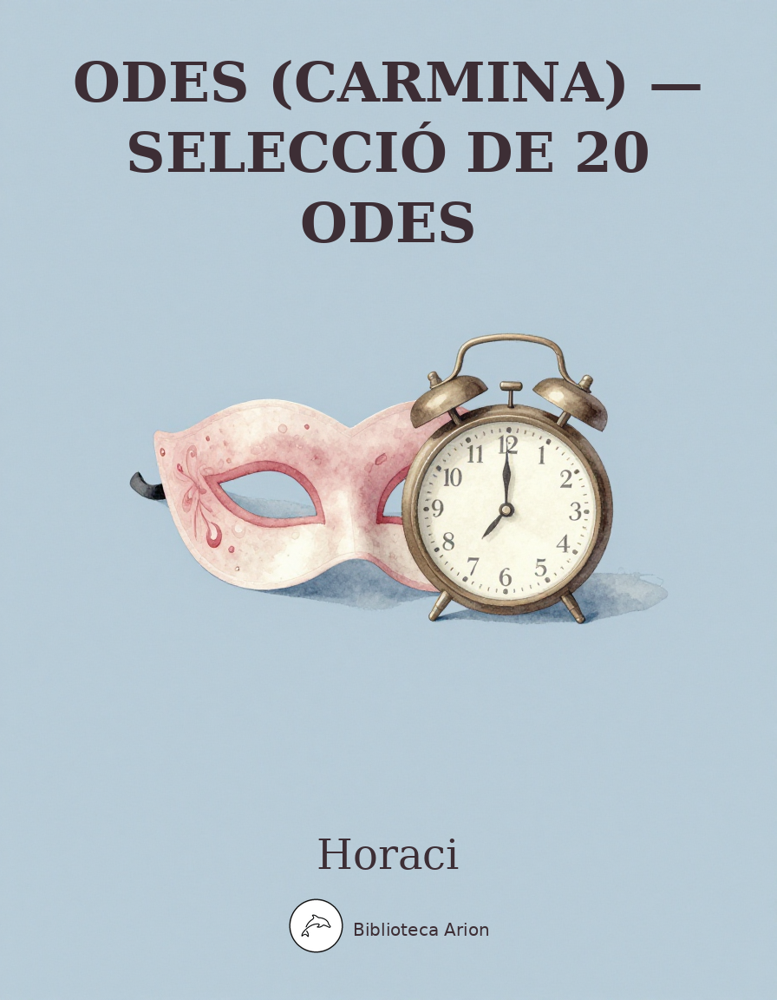

Odes (Carmina) — Selecció de 20 Odes
Carmina
Selecció de 20 odes dels quatre llibres de les Carmina d'Horaci, el gran poeta líric romà. Les Odes són l'obra mestra de la lírica llatina, amb temes com el carpe diem, l'amistat, l'amor, la naturalesa i la reflexió sobre la mortalitat.
I
Maecenas atavis edite regibus, o et praesidium et dulce decus meum, sunt quos curriculo pulverem Olympicum collegisse iuvat metaque fervidis evitata rotis palmaque nobilis 5 terrarum dominos evehit ad deos; hunc, si mobilium turba Quiritium certat tergeminis tollere honoribus; illum, si proprio condidit horreo quicquid de Libycis verritur areis. 10 Gaudentem patrios findere sarculo agros Attalicis condicionibus numquam demoveas, ut trabe Cypria Myrtoum pavidus nauta secet mare. Luctantem Icariis fluctibus Africum 15 mercator metuens otium et oppidi laudat rura sui; mox reficit rates quassas, indocilis pauperiem pati. Est qui nec veteris pocula Massici nec partem solido demere de die 20 spernit, nunc viridi membra sub arbuto stratus, nunc ad aquae lene caput sacrae. Multos castra iuvant et lituo tubae permixtus sonitus bellaque matribus detestata. Manet sub Iove frigido 25 venator tenerae coniugis inmemor, seu visa est catulis cerva fidelibus, seu rupit teretis Marsus aper plagas. Me doctarum hederae praemia frontium dis miscent superis, me gelidum nemus 30 Nympharumque leves cum Satyris chori secernunt populo, si neque tibias Euterpe cohibet nec Polyhymnia Lesboum refugit tendere barbiton. Quod si me lyricis vatibus inseres, 35 sublimi feriam sidera vertice.
II
Iam satis terris nivis atque dirae grandinis misit Pater et rubente dextera sacras iaculatus arces terruit Urbem,
terruit gentis, grave ne rediret 5 saeculum Pyrrhae nova monstra questae, omne cum Proteus pecus egit altos visere montis,
piscium et summa genus haesit ulmo, nota quae sedes fuerat columbis, 10 et superiecto pavidae natarunt aequore dammae.
Vidimus flavom Tiberim retortis litore Etrusco violenter undis ire deiectum monumenta regis 15 templaque Vestae,
Iliae dum se nimium querenti iactat ultorem, vagus et sinistra labitur ripa Iove non probante uxorius amnis. 20
Audiet civis acuisse ferrum, quo graves Persae melius perirent, audiet pugnas vitio parentum rara iuventus.
Quem vocet divum populus ruentis 25 imperi rebus? Prece qua fatigent virgines sanctae minus audientem carmina Vestam?
Cui dabit partis scelus expiandi Iuppiter? Tandem venias precamur, 30 nube candentis umeros amictus, augur Apollo,
sive tu mavis, Erycina ridens, quam Iocus circumvolat et Cupido, sive neglectum genus et nepotes 35 respicis, auctor,
heu nimis longo satiate ludo, quem iuvat clamor galeaeque leves, acer et Mauri peditis cruentum voltus in hostem, 40
sive mutata iuvenem figura ales in terris imitaris, almae filius Maiae, patiens vocari Caesaris ultor.
Serus in caelum redeas diuque 45 laetus intersis populo Quirini, neve te nostris vitiis iniquum ocior aura
tollat; hic magnos potius triumphos, hic ames dici pater atque princeps, 50 neu sinas Medos equitare inultos te duce, Caesar.
III
Sic te diva potens Cypri,
sic fratres Helenae, lucida sidera, ventorumque regat pater obstrictis aliis praeter Iapyga, navis, quae tibi creditum 5 debes Vergilium; finibus Atticis reddas incolumem precor et serves animae dimidium meae. Illi robur et aes triplex circa pectus erat, qui fragilem truci 10 commisit pelago ratem primus, nec timuit praecipitem Africum decertantem Aquilonibus nec tristis Hyadas nec rabiem Noti, quo non arbiter Hadriae 15 maior, tollere seu ponere volt freta. Quem mortis timuit gradum qui siccis oculis monstra natantia, qui vidit mare turbidum et infamis scopulos Acroceraunia? 20 Nequicquam deus abscidit prudens Oceano dissociabili terras, si tamen impiae non tangenda rates transiliunt vada. Audax omnia perpeti 25 gens humana ruit per vetitum nefas; audax Iapeti genus ignem fraude mala gentibus intulit; post ignem aetheria domo subductum macies et nova febrium 30 terris incubuit cohors semotique prius tarda necessitas leti corripuit gradum. Expertus vacuum Daedalus aera pennis non homini datis; 35 perrupit Acheronta Herculeus labor. Nil mortalibus ardui est; caelum ipsum petimus stultitia neque per nostrum patimur scelus iracunda Iovem ponere fulmina. 40
IV
Soluitur acris hiems grata vice veris et Favoni trahuntque siccas machinae carinas, ac neque iam stabulis gaudet pecus aut arator igni nec prata canis albicant pruinis. Iam Cytherea choros ducit Venus imminente luna 5 iunctaeque Nymphis Gratiae decentes alterno terram quatiunt pede, dum gravis Cyclopum Volcanus ardens visit officinas. Nunc decet aut viridi nitidum caput impedire myrto aut flore, terrae quem ferunt solutae; 10 nunc et in umbrosis Fauno decet immolare lucis, seu poscat agna sive malit haedo. Pallida Mors aequo pulsat pede pauperum tabernas regumque turris. O beate Sesti, vitae summa brevis spem nos vetat inchoare longam. 15 Iam te premet nox fabulaeque Manes et domus exilis Plutonia, quo simul mearis, nec regna vini sortiere talis nec tenerum Lycidan mirabere, quo calet iuventus nunc omnis et mox virgines tepebunt. 20
V
Quis multa gracilis te puer in rosa perfusus liquidis urget odoribus grato, Pyrrha, sub antro? cui flavam religas comam,
simplex munditiis? Heu quotiens fidem 5 mutatosque deos flebit et aspera nigris aequora ventis emirabitur insolens,
qui nunc te fruitur credulus aurea, qui semper vacuam, semper amabilem 10 sperat, nescius aurae fallacis. Miseri, quibus
intemptata nites. Me tabula sacer votiva paries indicat uvida suspendisse potenti vestimenta maris deo. 15
VI
Scriberis Vario fortis et hostium uictor, Maeonii carminis alite, quam rem cumque ferox nauibus aut equis miles te duce gesserit.
Nos, Agrippa, neque haec dicere nec gravem 5 Pelidae stomachum cedere nescii, nec cursus duplicis per mare Vlixei nec saevam Pelopis domum
conamur, tenues grandia, dum pudor inbellisque lyrae Musa potens vetat 10 laudes egregii Caesaris et tuas culpa deterere ingeni.
Quis Martem tunica tectum adamantina digne scripserit aut pulvere Troico nigrum Merionen aut ope Palladis 15 Tydiden superis parem?
Nos convivia, nos proelia virginum sectis in iuvenes unguibus acrium cantamus, vacui sive quid urimur non praeter solitum leves. 20
VII
Laudabunt alii claram Rhodon aut Mytilenen aut Ephesum bimarisve Corinthi moenia vel Baccho Thebas vel Apolline Delphos insignis aut Thessala Tempe; sunt quibus unum opus est intactae Palladis urbem 5 carmine perpetuo celebrare et undique decerptam fronti praeponere olivam; plurimus in Iunonis honorem aptum dicet equis Argos ditesque Mycenas: me nec tam patiens Lacedaemon 10 nec tam Larisae percussit campus opimae quam domus Albuneae resonantis et praeceps Anio ac Tiburni lucus et uda mobilibus pomaria riuis. Albus ut obscuro deterget nubila caelo 15 saepe Notus neque parturit imbris perpetuo, sic tu sapiens finire memento tristitiam vitaeque labores molli, Plance, mero, seu te fulgentia signis castra tenent seu densa tenebit 20 Tiburis umbra tui. Teucer Salamina patremque cum fugeret, tamen uda Lyaeo tempora populea fertur uinxisse corona, sic tristis affatus amicos: ‘Quo nos cumque feret melior fortuna parente, 25 ibimus, o socii comitesque. Nil desperandum Teucro duce et auspice Teucro: certus enim promisit Apollo ambiguam tellure nova Salamina futuram. O fortes peioraque passi mecum saepe viri, nunc vino pellite curas; 30 cras ingens iterabimus aequor.’
VIII
Lydia, dic, per omnis
te deos oro, Sybarin cur properes amando perdere, cur apricum oderit Campum, patiens pulveris atque solis, cur neque militaris 5 inter aequalis equitet, Gallica nec lupatis temperet ora frenis. Cur timet flavum Tiberim tangere? Cur olivum sanguine viperino cautius vitat neque iam livida gestat armis 10 bracchia, saepe disco saepe trans finem iaculo nobilis expedito? quid latet, ut marinae filium dicunt Thetidis sub lacrimosa Troia funera, ne virilis 15 cultus in caedem et Lycias proriperet catervas?
IX
Vides ut alta stet nive candidum Soracte nec iam sustineant onus silvae laborantes geluque flumina constiterint acuto?
Dissolve frigus ligna super foco 5 large reponens atque benignius deprome quadrimum Sabina, o Thaliarche, merum diota.
Permitte divis cetera, qui simul strauere ventos aequore fervido 10 deproeliantis, nec cupressi nec veteres agitantur orni.
Quid sit futurum cras, fuge quaerere, et quem fors dierum cumque dabit, lucro adpone nec dulcis amores sperne, puer, neque tu choreas, 15
donec virenti canities abest morosa. Nunc et Campus et areae lenesque sub noctem susurri composita repetantur hora,
nunc et latentis proditor intumo 20 gratus puellae risus ab angulo pignusque dereptum lacertis aut digito male pertinaci.
X
Mercuri, facunde nepos Atlantis, qui feros cultus hominum recentum voce formasti catus et decorae more palaestrae,
te canam, magni Iovis et deorum 5 nuntium curvaeque lyrae parentem, callidum quicquid placuit iocoso condere furto.
Te, boves olim nisi reddidisses per dolum amotas, puerum minaci 10 voce dum terret, viduus pharetra risit Apollo.
Quin et Atridas duce te superbos Ilio dives Priamus relicto Thessalosque ignis et iniqua Troiae 15 castra fefellit.
Tu pias laetis animas reponis sedibus virgaque levem coerces aurea turbam, superis deorum gratus et imis. 20
XI
Tu ne quaesieris (scire nefas) quem mihi, quem tibi finem di dederint, Leuconoe, nec Babylonios temptaris numeros. Ut melius quicquid erit pati! Seu pluris hiemes seu tribuit Iuppiter ultimam, quae nunc oppositis debilitat pumicibus mare 5 Tyrrhenum, sapias, vina liques et spatio brevi spem longam reseces. Dum loquimur, fugerit invida aetas: carpe diem, quam minimum credula postero.
XII
Quem virum aut heroa lyra vel acri tibia sumis celebrare, Clio? Quem deum? Cuius recinet iocosa nomen imago
aut in umbrosis Heliconis oris 5 aut super Pindo gelidove in Haemo? Unde vocalem temere insecutae Orphea silvae
arte materna rapidos morantem fluminum lapsus celerisque ventos, 10 blandum et auritas fidibus canoris ducere quercus.
Quid prius dicam solitis parentis laudibus, qui res hominum ac deorum, qui mare ac terras variisque mundum 15 temperat horis?
Unde nil maius generatur ipso nec viget quicquam simile aut secundum; proximos illi tamen occupabit Pallas honores. 20
Proeliis audax, neque te silebo, Liber, et saevis inimica virgo beluis, nec te, metuende certa Phoebe sagitta.
Dicam et Alciden puerosque Ledae, 25 hunc equis, illum superare pugnis nobilem; quorum simul alba nautis stella refulsit,
defluit saxis agitatus umor, concidunt venti fugiuntque nubes 30 et minax, quod sic volvere, ponto unda recumbit.
Romulum post hos prius an quietum Pompili regnum memorem, an superbos Tarquini fasces, dubito, an Catonis 35 nobile letum.
Regulum et Scauros animaeque magnae prodigum Paulum superante Poeno gratus insigni referam Camena Fabriciumque. 40
Hunc et incomptis Curium capillis utilem bello tulit et Camillum saeva paupertas et avitus apto cum lare fundus.
Crescit occulto velut arbor aevo 45 fama Marcelli; micat inter omnis Iulium sidus, velut inter ignis luna minores.
Gentis humanae pater atque custos, orte Saturno, tibi cura magni 50 Caesaris fatis data: tu secundo Caesare regnes.
Ille seu Parthos Latio imminentis egerit iusto domitos triumpho sive subiectos Orientis orae 55 Seras et Indos,
te minor laetum reget aequus orbem: tu gravi curru quaties Olympum, tu parum castis inimica mittes fulmina lucis. 60
XIII
Cum tu, Lydia, Telephi
cervicem roseam, cerea Telephi laudas bracchia, vae, meum fervens difficili bile tumet iecur. Tunc nec mens mihi nec color certa sede manet, umor et in genas 5 furtim labitur, arguens quam lentis penitus macerer ignibus. Uror, seu tibi candidos turparunt umeros inmodicae mero 10 rixae, sive puer furens inpressit memorem dente labris notam. Non, si me satis audias, speres perpetuum dulcia barbare laedentem oscula, quae Venus 15 quinta parte sui nectaris imbuit. Felices ter et amplius quos inrupta tenet copula nec malis divolsus querimoniis suprema citius solvet amor die. 20
XIV
O navis, referent in mare te novi fluctus. O quid agis? Fortiter occupa portum. Nonne vides ut nudum remigio latus,
et malus celeri saucius Africo 5 antemnaque gemant ac sine funibus vix durare carinae possint imperiosius
aequor? Non tibi sunt integra lintea, non di, quos iterum pressa voces malo. 10 Quamvis Pontica pinus, silvae filia nobilis,
iactes et genus et nomen inutile: nil pictis timidus navita puppibus fidit. Tu, nisi ventis 15 debes ludibrium, cave.
Nuper sollicitum quae mihi taedium, nunc desiderium curaque non levis, interfusa nitentis vites aequora Cycladas. 20
XV
Pastor cum traheret per freta navibus Idaeis Helenen perfidus hospitam, ingrato celeris obruit otio ventos ut caneret fera
Nereus fata: ‘Mala ducis avi domum 5 quam multo repetet Graecia milite, coniurata tuas rumpere nuptias et regnum Priami vetus.
Heu, heu, quantus equis, quantus adest viris sudor! Quanta moves funera Dardanae 10 genti! Iam galeam Pallas et aegida currusque et rabiem parat.
Nequicquam Veneris praesidio ferox pectes caesariem grataque feminis inbelli cithara carmina divides; 15 nequicquam thalamo gravis
hastas et calami spicula Cnosii vitabis strepitumque et celerem sequi Aiacem: tamen, heu serus, adulteros crines pulvere collines.
Non Laertiaden, exitium tuae 20 gentis, non Pylium Nestora respicis? Urgent inpavidi te Salaminius Teucer, te Sthenelus sciens
pugnae, sive opus est imperitare equis, 25 non auriga piger; Merionen quoque nosces. Ecce furit te reperire atrox Tydides melior patre,
quem tu, cervus uti vallis in altera visum parte lupum graminis inmemor, 30 sublimi fugies mollis anhelitu, non hoc pollicitus tuae.
Iracunda diem proferet Ilio matronisque Phrygum classis Achillei; post certas hiemes uret Achaicus 35 ignis Iliacas domos.’
XVI
O matre pulchra filia pulchrior, quem criminosis cumque voles modum pones iambis, sive flamma sive mari libet Hadriano.
Non Dindymene, non adytis quatit 5 mentem sacerdotum incola Pythius, non Liber aeque, non acuta sic geminant Corybantes aera,
tristes ut irae, quas neque Noricus deterret ensis nec mare naufragum 10 nec saevus ignis nec tremendo Iuppiter ipse ruens tumultu.
Fertur Prometheus addere principi limo coactus particulam undique desectam et insani leonis vim stomacho apposuisse nostro. 15
Irae Thyesten exitio gravi strauere et altis urbibus ultimae stetere causae, cur perirent funditus inprimeretque muris 20
hostile aratrum exercitus insolens. Conpesce mentem: me quoque pectoris temptavit in dulci iuventa feruor et in celeres iambos
misit furentem. Nunc ego mitibus 25 mutare quaero tristia, dum mihi fias recantatis amica opprobriis animumque reddas.
XVII
Velox amoenum saepe Lucretilem mutat Lycaeo Faunus et igneam defendit aestatem capellis usque meis pluviosque ventos.
Inpune tutum per nemus arbutos 5 quaerunt latentis et thyma deviae olentis uxores mariti nec viridis metuunt colubras
nec Martialis haediliae lupos, utcumque dulci, Tyndari, fistula 10 valles et Usticae cubantis levia personuere saxa.
Di me tuentur, dis pietas mea et Musa cordi est. Hic tibi copia manabit ad plenum benigno ruris honorum opulenta cornu; 15
hic in reducta valle Caniculae vitabis aestus et fide Teia dices laborantis in uno Penelopen vitreamque Circen; 20
hic innocentis pocula Lesbii duces sub umbra nec Semeleius cum Marte confundet Thyoneus proelia nec metues protervum
suspecta Cyrum, ne male dispari 25 incontinentis iniciat manus et scindat haerentem coronam crinibus inmeritamque vestem.
XVIII
Nullam, Vare, sacra vite prius severis arborem circa mite solum Tiburis et moenia Catili; siccis omnia nam dura deus proposuit neque mordaces aliter diffugiunt sollicitudines. Quis post vina gravem militiam aut pauperiem crepat? 5 Quis non te potius, Bacche pater, teque decens Venus? Ac ne quis modici transiliat munera Liberi, Centaurea monet cum Lapithis rixa super mero debellata, monet Sithoniis non levis Euhius, cum fas atque nefas exiguo fine libidinum 10 discernunt avidi. Non ego te, candide Bassareu, invitum quatiam nec variis obsita frondibus sub divum rapiam. Saeva tene cum Berecyntio cornu tympana, quae subsequitur caecus amor sui et tollens vacuum plus nimio gloria verticem 15 arcanique fides prodiga, perlucidior vitro.
XIX
Mater saeva Cupidinum
Thebanaeque iubet me Semelae puer et lasciva Licentia finitis animum reddere amoribus. Urit me Glycerae nitor 5 splendentis Pario marmore purius; urit grata proteruitas et voltus nimium lubricus aspici. In me tota ruens Venus Cyprum deseruit, nec patitur Scythas 10 aut versis animosum equis Parthum dicere nec quae nihil attinent. Hic vivum mihi caespitem, hic verbenas, pueri, ponite turaque bimi cum patera meri: mactata veniet lenior hostia. 15
XX
Vile potabis modicis Sabinum cantharis, Graeca quod ego ipse testa conditum levi, datus in theatro cum tibi plausus,
care Maecenas eques, ut paterni 5 fluminis ripae simul et iocosa redderet laudes tibi Vaticani montis imago.
Caecubum et prelo domitam Caleno tu bibes uvam; mea nec Falernae 10 temperant vites neque Formiani pocula colles.
XXI
Dianam tenerae dicite virgines, intonsum, pueri, dicite Cynthium Latonamque supremo dilectam penitus Iovi;
vos laetam fluviis et nemorum coma, 5 quaecumque aut gelido prominet Algido, nigris aut Erymanthi silvis aut viridis Gragi;
vos Tempe totidem tollite laudibus natalemque, mares, Delon Apollinis 10 insignemque pharetra fraternaque umerum lyra.
Hic bellum lacrimosum, hic miseram famem pestemque a populo et principe Caesare in Persas atque Britannos vestra motus aget prece. 15
XXII
Integer vitae scelerisque purus non eget Mauris iaculis neque arcu nec venenatis gravida sagittis, Fusce, pharetra,
sive per Syrtis iter aestuosas 5 sive facturus per inhospitalem Caucasum vel quae loca fabulosus lambit Hydaspes.
Namque me silva lupus in Sabina, dum meam canto Lalagen et ultra 10 terminum curis vagor expeditis, fugit inermem,
quale portentum neque militaris Daunias latis alit aesculetis nec Iubae tellus generat, leonum 15 arida nutrix.
Pone me pigris ubi nulla campis arbor aestiva recreatur aura, quod latus mundi nebulae malusque Iuppiter urget; 20
pone sub curru nimium propinqui solis in terra domibus negata: dulce ridentem Lalagen amabo, dulce loquentem.
XXIII
Vitas inuleo me similis, Chloe, quaerenti pavidam montibus aviis matrem non sine vano aurarum et silvae metu.
Nam seu mobilibus veris inhorruit 5 adventus folliis, seu virides rubum dimovere lacertae, et corde et genibus tremit.
Atqui non ego te, tigris ut aspera Gaetulusue leo, frangere persequor: 10 tandem desine matrem tempestiva sequi viro.
XXIV
Quis desiderio sit pudor aut modus tam cari capitis? Praecipe lugubris cantus, Melpomene, cui liquidam pater vocem cum cithara dedit.
Ergo Quintilium perpetuus sopor 5 urget? Cui Pudor et Iustitiae soror, incorrupta Fides, nudaque Veritas quando ullum inveniet parem?
Multis ille bonis flebilis occidit, nulli flebilior quam tibi, Vergili. 10 Tu frustra pius, heu, non ita creditum poscis Quintilium deos.
Quid si Threicio blandius Orpheo auditam moderere arboribus fidem? Num vanae redeat sanguis imagini, 15 quam virga semel horrida,
non lenis precibus fata recludere, nigro compulerit Mercurius gregi? durum: sed levius fit patientia quicquid corrigere est nefas. 20
XXV
Parcius iunctas quatiunt fenestras iactibus crebris iuvenes proterui nec tibi somnos adimunt amatque ianua limen,
quae prius multum facilis movebat 5 cardines. Audis minus et minus iam: ‘Me tuo longas perevnte noctes, Lydia, dormis?’
Invicem moechos anus arrogantis flebis in solo levis angiportu 10 Thracio bacchante magis sub interlunia vento,
cum tibi flagrans amor et libido, quae solet matres furiare equorum, saeviet circa iecur ulcerosum 15 non sine questu,
laeta quod pubes hedera virenti gaudeat pulla magis atque myrto, aridas frondes hiemis sodali dedicet Euro. 20
XXVI
Musis amicus tristitiam et metus tradam protervis in mare Creticum portare ventis, quis sub Arcto rex gelidae metuatur orae,
quid Tiridaten terreat, unice 5 securus. O quae fontibus integris gaudes, apricos necte flores, necte meo Lamiae coronam,
Piplea dulcis. Nil sine te mei prosunt honores; hunc fidibus novis, 10 hunc Lesbio sacrare plectro teque tuasque decet sorores.
XXVII
Natis in usum laetitiae scyphis pugnare Thracum est; tollite barbarum morem verecundumque Bacchum sanguineis prohibete rixis.
Vino et lucernis Medus acinaces 5 immane quantum discrepat; impium lenite clamorem, sodales, et cubito remanete presso.
Voltis severi me quoque sumere partem Falerni? Dicat Opuntiae 10 frater Megyllae quo beatus volnere, qua pereat sagitta.
Cessat voluntas? Non alia bibam mercede. Quae te cumque domat Venus non erubescendis adurit ignibus ingenuoque semper 15
amore peccas. Quicquid habes, age, depone tutis auribus. A! miser, quanta laborabas Charybdi, digne puer meliore flamma. 20
Quae saga, quis te solvere Thessalis magus venenis, quis poterit deus? vix inligatum te triformi Pegasus expediet Chimaera.
XXVIII
Te maris et terrae numeroque carentis harenae mensorem cohibent, Archyta, pulveris exigui prope latum parva Matinum munera nec quicquam tibi prodest aerias temptasse domos animoque rotundum 5 percurrisse polum morituro. Occidit et Pelopis genitor, conviva deorum, Tithonusque remotus in auras et Iovis arcanis Minos admissus habentque Tartara Panthoiden iterum Orco 10 demissum, quamvis clipeo Troiana refixo tempora testatus nihil ultra nervos atque cutem morti concesserat atrae, iudice te non sordidus auctor naturae verique. Sed omnis una manet nox 15 et calcanda semel via leti. Dant alios Furiae toruo spectacula Marti, exitio est avidum mare nautis; mixta senum ac iuvenum densentur funera, nullum saeva caput Proserpina fugit. 20 Me quoque devexi rapidus comes Orionis Illyricis Notus obruit undis. At tu, nauta, vagae ne parce malignus harenae ossibus et capiti inhumato particulam dare: sic, quodcumque minabitur Eurus 25 fluctibus Hesperiis, Venusinae plectantur silvae te sospite multaque merces, unde potest, tibi defluat aequo ab Iove Neptunoque sacri custode Tarenti. Neglegis inmeritis nocituram postmodo te natis fraudem committere? Fors et 30 debita iura vicesque superbae te maneant ipsum: precibus non linquar inultis teque piacula nulla resolvent. Quamquam festinas, non est mora longa; licebit 35 iniecto ter pulvere curras.
XXIX
Icci, beatis nunc Arabum invides gazis et acrem militiam paras non ante devictis Sabaeae regibus horribilique Medo
nectis catenas? Quae tibi virginum 5 sponso necato barbara serviet? puer quis ex aula capillis ad cyathum statuetur unctis,
doctus sagittas tendere Sericas arcu paterno? Quis neget arduis 10 pronos relabi posse rivos montibus et Tiberim reverti,
cum tu coemptos undique nobilis libros Panaeti Socraticam et domum mutare loricis Hiberis, pollicitus meliora, tendis? 15
XXX
O Venus regina Cnidi Paphique, sperne dilectam Cypron et vocantis ture te multo Glycerae decoram transfer in aedem.
Fervidus tecum puer et solutis 5 Gratiae zonis properentque Nymphae et parum comis sine te Iuventas Mercuriusque.
XXXI
Quid dedicatum poscit Apollinem vates? Quid orat, de patera novum fundens liquorem? Non opimae Sardiniae segetes feraces,
non aestuosae grata Calabriae 5 armenta, non aurum aut ebur Indicum, non rura, quae Liris quieta mordet aqua taciturnus amnis.
Premant Calena falce quibus dedit Fortuna vitem, dives et aureis 10 mercator exsiccet culillis vina Syra reparata merce,
dis carus ipsis, quippe ter et quater anno revisens aequor Atlanticum inpune: me pascust olivae, me cichorea levesque malvae. 15
Frui paratis et valido mihi, Latoe, dones, at, precor, integra cum mente, nec turpem senectam degere nec cithara carentem. 20
XXXII
Poscimur. Si quid vacui sub umbra lusimus tecum, quod et hunc in annum vivat et pluris, age, dic Latinum, barbite, carmen,
Lesbio primum modulate civi, 5 qui, ferox bello, tamen inter arma, sive iactatam religarat udo litore navem,
Liberum et Musas Veneremque et illi semper haerentem puerum canebat 10 et Lycum nigris oculis nigroque crine decorum.
O decus Phoebi et dapibus supremi grata testudo Iovis, o laborum dulce lenimen, mihi cumque salve 15 rite vocanti.
XXXIII
Albi, ne doleas plus nimio memor inmitis Glycerae neu miserabilis descantes elegos, cur tibi iunior laesa praeniteat fide.
Insignem tenui fronte Lycorida 5 Cyri torret amor, Cyrus in asperam declinat Pholoen: sed prius Apulis iungentur capreae lupis
quam turpi Pholoe peccet adultero. Sic visum Veneri, cui placet imparis 10 formas atque animos sub iuga aenea saevo mittere cum ioco.
Ipsum me melior cum peteret Venus, grata detinuit compede Myrtale libertina, fretis acrior Hadriae 15 curuantis Calabros sinus.
XXXIV
Parcus deorum cultor et infrequens, insanientis dum sapientiae consultus erro, nunc retrorsum vela dare atque iterare cursus
cogor relictos: namque Diespiter 5 igni corusco nubila dividens plerumque, per purum tonantis egit equos volucremque currum,
quo bruta tellus et vaga flumina, quo Styx et invisi horrida Taenari 10 sedes Atlanteusque finis concutitur. Valet ima summis
mutare et insignem attenuat deus, obscura promens; hinc apicem rapax Fortuna cum stridore acuto sustulit, hic posuisse gaudet. 15
XXXV
O diva, gratum quae regis Antium, praesens vel imo tollere de gradu mortale corpus vel superbos vertere funeribus triumphos,
te pauper ambit sollicita prece 5 ruris colonus, te dominam aequoris quicumque Bythyna lacessit Carpathium pelagus carina.
Te Dacus asper, te profugi Scythae, urbesque gentesque et Latium ferox 10 regumque matres barbarorum et purpurei metuunt tyranni,
iniurioso ne pede proruas stantem columnam, neu populus frequens ad arma cessantis, ad arma concitet imperiumque frangat. 15
Te semper anteit serva Necessitas, clavos trabalis et cuneos manu gestans aena nec severus uncus abest liquidumque plumbum; 20
te Spes et albo rara Fides colit velata panno nec comitem abnegat, utcumque mutata potentis veste domos inimica linquis;
at volgus infidum et meretrix retro 25 periura cedit, diffugiunt cadis cum faece siccatis amici, ferre iugum pariter dolosi.
Serves iturum Caesarem in ultimos orbis Britannos et iuvenum recens 30 examen Eois timendum partibus Oceanoque rubro.
Heu heu, cicatricum et sceleris pudet fratrumque. Quid nos dura refugimus aetas, quid intactum nefasti liquimus? Unde manum iuventus 35
metu deorum continuit? Quibus pepercit aris? O utinam nova incude diffingas retusum in Massagetas Arabasque ferrum! 40
XXXVI
Et ture et fidibus iuvat
placare et vituli sanguini debito custodes Numidae deos, qui nunc Hesperia sospes ab ultima caris multa sodalibus, 5 nulli plura tamen dividit oscula quam dulci Lamiae, memor actae non alio rege puertiae mutataeque simul togae. Cressa ne careat pulchra dies nota 10 neu promptae modus amphorae neu morem in Salium sit requies pedum neu multi Damalis meri Bassum Threicia vincat amystide neu desint epulis rosae 15 neu vivax apium neu breve lilium. Omnes in Damalin putres deponent oculos nec Damalis nouo divelletur adultero lascivis hederis ambitiosior. 20
XXXVII
Nunc est bibendum, nunc pede libero pulsanda tellus, nunc Saliaribus ornare pulvinar deorum tempus erat dapibus, sodales.
Antehac nefas depromere Caecubum 5 cellis avitis, dum Capitolio regina dementis ruinas funus et imperio parabat
contaminato cum grege turpium morbo virorum, quidlibet impotens 10 sperare fortunaque dulci ebria. Sed minuit furorem
vix una sospes navis ab ignibus, mentemque lymphatam Mareotico redegit in veros timores 15 Caesar, ab Italia volantem
remis adurgens, accipiter velut mollis columbas aut leporem citus venator in campis nivalis Haemoniae, daret ut catenis 20
fatale monstrum. Quae generosius perire quaerens nec muliebriter expavit ensem nec latentis classe cita reparavit oras,
ausa et iacentem visere regiam 25 voltu sereno, fortis et asperas tractare serpentes, ut atrum corpore conbiberet venenum,
deliberata morte ferocior: saevis Liburnis scilicet invidens 30 privata deduci superbo, non humilis mulier, triumpho.
XXXVIII
Persicos odi, puer, apparatus, displicent nexae philyra coronae, mitte sectari, rosa quo locorum sera moretur.
Simplici myrto nihil adlabores 5 sedulus, curo: neque te ministrum dedecet myrtus neque me sub arta vite bibentem.
Horace
Q. HORATI FLACCI CARMINVM LIBER SECVNDVS
I
Motum ex Metello consule civicum
bellique causas et vitia et modos
ludumque Fortunae gravisque
principum amicitias et arma
nondum expiatis uncta cruoribus, 5
periculosae plenum opus aleae,
tractas et incedis per ignis
suppositos cineri doloso.
Paulum severae Musa tragoediae
desit theatris; mox, ubi publicas 10
res ordinaris, grande munus
Cecropio repetes coturno,
insigne maestis praesidium reis
et consulenti, Pollio, curiae,
cui laurus aeternos honores
Delmatico peperit triumpho. 15
Iam nunc minaci murmure cornuum
perstringis auris, iam litui strepunt,
iam fulgor armorum fugacis
terret equos equitumque voltus. 20
Audire magnos iam videor duces
non indecoro pulvere sordidos
et cuncta terrarum subacta
praeter atrocem animum Catonis.
Iuno et deorum quisquis amicior 25
Afris inulta cesserat impotens
tellure, victorum nepotes
rettulit inferias Iugurthae.
Quis non Latino sanguine pinguior
campus sepulcris impia proelia 30
testatur auditumque Medis
Hesperiae sonitum ruinae?
Qui gurges aut quae flumina lugubris
ignara belli? Quod mare Dauniae
non decoloravere caedes?
Quae caret ora cruore nostro? 35
Sed ne relictis, Musa procax, iocis
Ceae retractes munera Neniae,
mecum Dionaeo sub antro
quaere modos leviore plectro. 40
II
Nullus argento color est avaris
abdito terris, inimice lamnae
Crispe Sallusti, nisi temperato
splendeat usu.
Vivet extento Proculeius aevo, 5
notus in fratres animi paterni;
illum aget pinna metuente solui
Fama superstes.
Latius regnes avidum domando
spiritum quam si Libyam remotis 10
Gadibus iungas et uterque Poenus
serviat uni.
Crescit indulgens sibi dirus hydrops
nec sitim pellit, nisi causa morbi
fugerit venis et aquosus albo 15
corpore languor.
Redditum Cyri solio Prahaten
dissidens plebi numero beatorum
eximit Virtus populumque falsis
dedocet uti 20
vocibus, regnum et diadema tutum
deferens uni propriamque laurum
quisquis ingentis oculo inretorto
spectat acervos.
III
Aequam memento rebus in arduis
servare mentem, non secus in bonis
ab insolenti temperatam
laetitia, moriture Delli,
seu maestus omni tempore vixeris 5
seu te in remoto gramine per dies
festos reclinatum bearis
interiore nota Falerni.
Quo pinus ingens albaque populus
umbram hospitalem consociare amant 10
ramis? Quid obliquo laborat
lympha fugax trepidare rivo?
Huc vina et unguenta et nimium brevis
flores amoenae ferre iube rosae,
dum res et aetas et Sororum
fila trium patiuntur atra. 15
Cedes coemptis saltibus et domo
villaque, flauvs quam Tiberis lavit,
cedes, et exstructis in altum
divitiis potietur heres. 20
Divesne prisco natus ab Inacho
nil interest an pauper et infima
de gente sub divo moreris,
victima nil miserantis Orci;
omnes eodem cogimur, omnium 25
versatur urna serius ocius
sors exitura et nos in aeternum
exilium impositura cumbae.
IV
Ne sit ancillae tibi amor pudori,
Xanthia Phoceu: prius insolentem
serva Briseis niveo colore
movit Anchillem;
movit Aiacem Telamone natum 5
forma captivae dominum Tecmessae;
arsit Atrides medio in triumpho
virgine rapta,
barbarae postquam cecidere turmae
Thessalo victore et ademptus Hector 10
tradidit fessis leviora tolli
Pergama Grais.
Nescias an te generum beati
Phyllidis flavae decorent parentes;
regium certe genus et penatis 15
maeret iniquos.
Crede non illam tibi de scelesta
plebe delectam, neque sic fidelem,
sic lucro aversam potuisse nasci
matre pudenda. 20
Bracchia et voltum teretisque suras
integer laudo: fuge suspicari
cuius octauvm trepidavit aetas
claudere lustrum.
V
Nondum subacta ferre iugum valet
cervice, nondum munia comparis
aequare nec tauri ruentis
in venerem tolerare pondus.
Circa virentis est animus tuae 5
campos iuvencae, nunc fluviis gravem
solantis aestum, nunc in udo
ludere cum vitulis salicto
praegestientis. Tolle cupidinem
immitis uvae: iam tibi lividos 10
distinguet autumnus racemos
purpureo varius colore;
iam te sequetur; currit enim ferox
aetas et illi quos tibi dempserit
adponet annos; iam proterva
fronte petet Lalage maritum, 15
dilecta, quantum non Pholoe fugax,
non Chloris albo sic umero nitens
ut pura nocturno renidet
luna mari Cnidiusve Gyges, 20
quem si puellarum insereres choro,
mire sagacis falleret hospites
discrimen obscurum solutis
crinibus ambiguoque voltu.
VI
Septimi, Gadis aditure mecum et
Cantabrum indoctum iuga ferre nostra et
barbaras Syrtis, ubi Maura semper
aestuat unda,
Tibur Argeo positum colono 5
sit meae sedes utinam senectae,
sit modus lasso maris et viarum
militiaeque.
Unde si Parcae prohibent iniquae,
dulce pellitis ovibus Galaesi 10
flumen et regnata petam Laconi
rura Phalantho.
Ille terrarum mihi praeter omnis
angulus ridet, ubi non Hymetto
mella decedunt viridique certat 15
baca Venafro,
ver ubi longum tepidasque praebet
Iuppiter brumas et amicus Aulon
fertili Baccho minimum Falernis
invidet uvis. 20
Ille te mecum locus et beatae
postulant arces; ibi tu calentem
debita sparges lacrima favillam
vatis amici.
VII
O saepe mecum tempus in ultimum
deducte Bruto militiae duce,
quis te redonavit Quiritem
dis patriis Italoque caelo,
Pompei, meorum prime sodalium, 5
cum quo morantem saepe diem mero
fregi, coronatus nitentis
malobathro Syrio capillos?
Tecum Philippos et celerem fugam
sensi relicta non bene parmula, 10
cum fracta virtus et minaces
turpe solum tetigere mento;
sed me per hostis Mercurius celer
denso paventem sustulit aere,
te rursus in bellum resorbens 15
unda fretis tulit aestuosis.
Ergo obligatam redde Iovi dapem
longaque fessum militia latus
depone sub lauru mea, nec
parce cadis tibi destinatis. 20
Oblivioso levia Massico
ciboria exple, funde capacibus
unguenta de conchis. Quis udo
deproperare apio coronas
curatve myrto? Quem Venus arbitrum 25
dicet bibendi? Non ego sanius
bacchabor Edonis: recepto
dulce mihi furere est amico.
VIII
Ulla si iuris tibi peierati
poena, Barine, nocuisset umquam,
dente si nigro fieres vel uno
turpior ungui,
crederem; sed tu simul obligasti 5
perfidum votis caput, enitescis
pulchrior multo iuvenumque prodis
publica cura.
Expedit matris cineres opertos
fallere et toto taciturna noctis 10
signa cum caelo gelidaque divos
morte carentis.
Ridet hoc, inquam, Venus ipsa, rident
simplices Nymphae, ferus et Cupido
semper ardentis acuens sagittas 15
cote cruenta.
Adde quod pubes tibi crescit omnis,
servitus crescit nova nec priores
impiae tectum dominae relinquunt
saepe minati. 20
Te suis matres metuunt iuvencis,
te senes parci miseraeque nuper
virgines nuptae, tua ne retardet
aura maritos.
IX
Non semper imbres nubibus hispidos
manant in agros aut mare Caspium
vexant inaequales procellae
usque, nec Armeniis in oris,
amice Valgi, stat glacies iners 5
mensis per omnis aut Aquilonibus
querqueta Gargani laborant
et foliis viduantur orni:
tu semper urges flebilibus modis
Mysten ademptum, nec tibi Vespero 10
surgente decedunt amores
nec rapidum fugiente solem.
At non ter aevo functus amabilem
ploravit omnis Antilochum senex
annos nec inpubem parentes 15
Troilon aut Phrygiae sorores
flevere semper. Desine mollium
tandem querellarum et potius nova
cantemus Augusti tropaea
Caesaris et rigidum Niphaten 20
Medumque flumen gentibus additum
victis minores volvere vertices
intraque praescriptum Gelonos
exiguis equitare campis.
X
Rectius vives, Licini, neque altum
semper urgendo neque, dum procellas
cautus horrescis, nimium premendo
litus iniquum.
Auream quisquis mediocritatem 5
diligit, tutus caret obsoleti
sordibus tecti, caret invidenda
sobrius aula.
Saepius ventis agitatur ingens
pinus et celsae graviore casu 10
decidunt turres feriuntque summos
fulgura montis.
Sperat infestis, metuit secundis
alteram sortem bene praeparatum
pectus. Informis hiemes reducit 15
Iuppiter, idem
summovet. Non, si male nunc, et olim
sic erit: quondam cithara tacentem
suscitat Musam neque semper arcum
tendit Apollo. 20
Rebus angustis animosus atque
fortis appare; sapienter idem
contrahes vento nimium secundo
turgida vela.
XI
Quid bellicosus Cantaber et Scythes,
Hirpine Quincti, cogitet Hadria
divisus obiecto, remittas
quaerere nec trepides in usum
poscentis aevi pauca: fugit retro 5
levis iuventas et decor, arida
pellente lascivos amores
canitie facilemque somnum.
Non semper idem floribus est honor
vernis neque uno luna rubens nitet 10
voltu: quid aeternis minorem
consiliis animum fatigas?
Cur non sub alta vel platano vel hac
pinu iacentes sic temere et rosa
canos odorati capillos, 15
dum licet, Assyriaque nardo
potamus uncti? dissipat Euhius
curas edacis. Quis puer ocius
restinguet ardentis Falerni
pocula praetereunte lympha? 20
Quis devium scortum eliciet domo
Lyden? Eburna dic, age, cum lyra
maturet, in comptum Lacaenae
more comas religata nodum.
XII
Nolis longa ferae bella Numantiae,
nec durum Hannibalem nec Siculum mare
Poeno purpureum sanguine mollibus
aptari citharae modis,
nec saevos Lapithas et nimium mero 5
Hylaeum domitosque Herculea manu
Telluris iuvenes, unde periculum
fulgens contremuit domus
Saturni veteris; tuque pedestribus
dices historiis proelia Caesaris, 10
Maecenas, melius ductaque per vias
regum colla minacium.
Me dulcis dominae Musa Licymniae
cantus, me voluit dicere lucidum
fulgentis oculos et bene mutuis 15
fidum pectus amoribus;
quam nec ferre pedem dedecuit choris
nec certare ioco nec dare bracchia
ludentem nitidis virginibus sacro
Dianae celebris die. 20
Num tu quae tenuit dives Achaemenes
aut pinguis Phrygiae Mygdonias opes
permutare velis crine Licymniae,
plenas aut Arabum domos
cum flagrantia detorquet ad oscula 25
cervicem aut facili saevitia negat
quae poscente magis gaudeat eripi,
interdum rapere occupet?
XIII
Ille et nefasto te posuit die,
quicumque primum, et sacrilega manu
produxit, arbos, in nepotum
perniciem obprobriumque pagi;
illum et parentis crediderim sui 5
fregisse cervicem et penetralia
sparsisse nocturno cruore
hospitis, ille venena Colcha
et quidquid usquam concipitur nefas
tractavit, agro qui statuit meo 10
te, triste lignum, te, caducum
in domini caput inmerentis.
Quid quisque vitet, nunquam homini satis
cautum est in horas: navita Bosphorum
Poenus perhorrescit neque ultra 15
caeca timet aliunde fata,
miles sagittas et celerem fugam
Parthi, catenas Parthus et Italum
robur; sed inprovisa leti
uis rapuit rapietque gentis. 20
Quam paene furvae regna Proserpinae
et iudicantem vidimus Aeacum
sedesque discriptas piorum et
Aeoliis fidibus querentem
Sappho puellis de popularibus 25
et te sonantem plenius aureo,
Alcaee, plectro dura navis,
dura fugae mala, dura belli.
Utrumque sacro digna silentio
mirantur umbrae dicere, sed magis 30
pugnas et exactos tyrannos
densum umeris bibit aure volgus.
Quid mirum, ubi illis carminibus stupens
demittit atras belua centiceps
auris et intorti capillis 35
Eumenidum recreantur angues?
Quin et Prometheus et Pelopis parens
dulci laborum decipitur sono
nec curat Orion leones
aut timidos agitare lyncas. 40
XIV
Eheu fugaces, Postume, Postume,
labuntur anni nec pietas moram
rugis et instanti senectae
adferet indomitaeque morti,
non, si trecenis quotquot eunt dies, 5
amice, places inlacrimabilem
Plutona tauris, qui ter amplum
Geryonen Tityonque tristi
compescit unda, scilicet omnibus
quicumque terrae munere vescimur 10
enaviganda, sive reges
sive inopes erimus coloni.
Frustra cruento Marte carebimus
fractisque rauci fluctibus Hadriae,
frustra per autumnos nocentem 15
corporibus metuemus Austrum:
visendus ater flumine languido
Cocytos errans et Danai genus
infame damnatusque longi
Sisyphus Aeolides laboris. 20
Linquenda tellus et domus et placens
uxor, neque harum quas colis arborum
te praeter invisas cupressos
ulla brevem dominum sequetur;
absumet heres Caecuba dignior 25
servata centum clavibus et mero
tinguet pavimentum superbo,
pontificum potiore cenis.
XV
Iam pauca aratro iugera regiae
moles relinquent, undique latius
extenta visentur Lucrino
stagna lacu platanusque caelebs
evincet ulmos; tum violaria et 5
myrtus et omnis copia narium
spargent olivetis odorem
fertilibus domino priori;
tum spissa ramis laurea fervidos
excludet ictus. Non ita Romuli 10
praescriptum et intonsi Catonis
auspiciis veterumque norma.
Privatus illis census erat brevis,
commune magnum; nulla decempedis
metata privatis opacam 15
porticus excipiebat Arcton,
nec fortuitum spernere caespitem
leges sinebant, oppida publico
sumptu iubentes et deorum
templa novo decorare saxo. 20
XVI
Otium divos rogat in patenti
prensus Aegaeo, simul atra nubes
condidit lunam neque certa fulgent
sidera nautis;
otium bello furiosa Thrace, 5
otium Medi pharetra decori,
Grosphe, non gemmis neque purpura
venale neque auro.
Non enim gazae neque consularis
summovet lictor miseros tumultus 10
mentis et curas laqueata circum
tecta volantis.
Vivitur parvo bene, cui paternum
splendet in mensa tenui salinum
nec levis somnos timor aut cupido 15
sordidus aufert.
Quid brevi fortes iaculamur aevo
multa? Quid terras alio calentis
sole mutamus? Patriae quis exul
se quoque fugit? 20
Scandit aeratas vitiosa navis
cura nec turmas equitum relinquit,
ocior cervis et agente nimbos
ocior Euro.
Laetus in praesens animus quod ultra est 25
oderit curare et amara lento
temperet risu: nihil est ab omni
parte beatum.
Abstulit clarum cita mors Achillem,
longa Tithonum minuit senectus, 30
et mihi forsan, tibi quod negarit,
porriget hora.
Te greges centum Siculaeque circum
mugiunt vaccae, tibi tollit hinnitum
apta quadrigis equa, te bis Afro 35
murice tinctae
vestiunt lanae; mihi parva rura et
spiritum Graiae tenuem Camenae
Parca non mendax dedit et malignum
spernere volgus. 40
XVII
Cur me querellis exanimas tuis?
Nec dis amicum est nec mihi te prius
obire, Maecenas, mearum
grande decus columenque rerum.
A! te meae si partem animae rapit 5
maturior vis, quid moror altera,
nec carus aeque nec superstes
integer? Ille dies utramque
ducet ruinam. Non ego perfidum
dixi sacramentum: ibimus, ibimus, 10
utcumque praecedes, supremum
carpere iter comites parati.
Me nec Chimaerae spiritus igneae
nec, si resurgat centimanus gigas,
divellet umquam: sic potenti 15
Iustitiae placitumque Parcis.
Seu Libra seu me Scorpios aspicit
formidolosus, pars violentior
natalis horae, seu tyrannus
Hesperiae Capricornus undae, 20
utrumque nostrum incredibili modo
consentit astrum; te Iovis impio
tutela Saturno refulgens
eripuit volucrisque Fati
tardavit alas, cum populus frequens 25
laetum theatris ter crepuit sonum;
me truncus inlapsus cerebro
sustulerat, nisi Faunus ictum
dextra levasset, Mercurialium
custos virorum. Reddere victimas 30
aedemque votivam memento;
nos humilem feriemus agnam.
XVIII
Non ebur neque aureum
mea renidet in domo lacunar;
non trabes Hymettiae
premunt columnas ultima recisas
Africa, neque Attali 5
ignotus heres regiam occupavi,
nec Laconicas mihi
trahunt honestae purpuras clientae.
At fides et ingeni
benigna vena est pauperemque dives 10
me petit; nihil supra
deos lacesso nec potentem amicum
largiora flagito,
satis beatus unicis Sabinis.
Truditur dies die 15
novaeque pergunt interire lunae;
tu secanda marmora
locas sub ipsum funus et sepulcri
inmemor struis domos
marisque Bais obstrepentis urges 20
summovere litora,
parum locuples continente ripa.
Quid quod usque proximos
revellis agri terminos et ultra
limites clientium 25
salis avarus? Pellitur paternos
in sinu ferens deos
et uxor et vir sordidosque natos.
Nulla certior tamen
rapacis Orci fine destinata 30
aula divitem manet
erum. Quid ultra tendis? Aequa tellus
pauperi recluditur
regumque pueris, nec satelles Orci
callidum Promethea 35
revexit auro captus. Hic superbum
Tantalum atque Tantali
genus coercet, hic levare functum
pauperem laboribus
vocatus atque non vocatus audit. 40
XIX
Bacchum in remotis carmina rupibus
vidi docentem, credite posteri,
Nymphasque discentis et auris
capripedum Satyrorum acutas.
Euhoe, recenti mens trepidat metu 5
plenoque Bacchi pectore turbidum
laetatur. Euhoe, parce Liber,
parce, gravi metuende thyrso.
Fas pervicacis est mihi Thyiadas
uinique fontem lactis et uberes 10
cantare rivos atque truncis
lapsa cavis iterare mella;
fas et beatae coniugis additum
stellis honorem tectaque Penthei
disiecta non leni ruina, 15
Thracis et exitium Lycurgi.
Tu flectis amnes, tu mare barbarum,
tu separatis uvidus in iugis
nodo coerces viperino
Bistonidum sine fraude crinis. 20
Tu, cum parentis regna per arduum
cohors Gigantum scanderet inpia,
Rhoetum retorsisti leonis
unguibus horribilique mala;
quamquam, choreis aptior et iocis 25
ludoque dictus, non sat idoneus
pugnae ferebaris; sed idem
pacis eras mediusque belli.
Te vidit insons Cerberus aureo
cornu decorum leniter atterens 30
caudam et recedentis trilingui
ore pedes tetigitque crura.
XX
Non usitata nec tenui ferar
penna biformis per liquidum aethera
vates neque in terris morabor
longius invidiaque maior
urbis relinquam. Non ego pauperum 5
sanguis parentum, non ego quem vocas,
dilecte Maecenas, obibo
nec Stygia cohibebor unda.
Iam iam residunt cruribus asperae
pelles et album mutor in alitem 10
superne nascunturque leves
per digitos umerosque plumae.
Iam Daedaleo ocior Icaro
uisam gementis litora Bosphori
Syrtisque Gaetulas canorus 15
ales Hyperboreosque campos.
Me Colchus et qui dissimulat metum
Marsae cohortis Dacus et ultimi
noscent Geloni, me peritus
discet Hiber Rhodanique potor. 20
Absint inani funere neniae
luctusque turpes et querimoniae;
conpesce clamorem ac sepulcri
mitte supervacuos honores.
Horace
Q. HORATI FLACCI CARMINVM LIBER TERTIVS
I
Odi profanum volgus et arceo.
Favete linguis: carmina non prius
audita Musarum sacerdos
virginibus puerisque canto.
Regum timendorum in proprios greges, 5
reges in ipsos imperium est Iovis,
clari Giganteo triumpho,
cuncta supercilio moventis.
Est ut viro vir latius ordinet
arbusta sulcis, hic generosior 10
descendat in campum petitor,
moribus hic meliorque fama
contendat, illi turba clientium
sit maior: aequa lege Necessitas
sortitur insignis et imos,
omne capax movet urna nomen. 15
Destrictus ensis cui super impia
cervice pendet, non Siculae dapes
dulcem elaboratum saporem,
non avium citharaequecantus 20
Somnum reducent: somnus agrestium
lenis virorum non humilis domos
fastidit umbrosamque ripam,
non Zephyris agitata tempe.
Desiderantem quod satis est neque 25
tumultuosum sollicitat mare,
nec saevus Arcturi cadentis
impetus aut orientis Haedi,
non verberatae grandine vineae
fundusque mendax, arbore nunc aquas 30
culpante, nunc torrentia agros
sidera, nunc hiemes iniquas.
Contracta pisces aequora sentiunt
iactis in altum molibus: huc frequens
caementa demittit redemptor
cum famulis dominusque terrae 35
fastidiosus: sed Timor et Minae
scandunt eodem quo dominus, neque
decedit aerata triremi et
post equitem sedet atra Cura. 40
Quod si dolentem nec Phrygius lapis
nec purpurarum sidere clarior
delenit usus nec Falerna
uitis Achaemeniumque costum,
cur invidendis postibus et novo 45
sublime ritu moliar atrium?
Cur valle permutem Sabina
divitias operosiores?
II
Angustam amice pauperiem pati
robustus acri militia puer
condiscat et Parthos ferocis
vexet eques metuendus hasta
vitamque sub divo et trepidis agat 5
in rebus. Illum ex moenibus hosticis
matrona bellantis tyranni
prospiciens et adulta virgo
suspiret, eheu, ne rudis agminum
sponsus lacessat regius asperum 10
tactu leonem, quem cruenta
per medias rapit ira caedes.
Dulce et decorum est pro patria mori:
mors et fugacem persequitur virum
nec parcit inbellis iuventae
poplitibus timidove tergo. 15
Virtus, repulsae nescia sordidae,
intaminatis fulget honoribus
nec sumit aut ponit securis
arbitrio popularis aurae. 20
Virtus, recludens inmeritis mori
caelum, negata temptat iter via
coetusque volgaris et udam
spernit humum fugiente pinna.
Est et fideli tuta silentio 25
merces: vetabo, qui Cereris sacrum
volgarit arcanae, sub isdem
sit trabibus fragilemque mecum
solvat phaselon; saepe Diespiter
neglectus incesto addidit integrum, 30
raro antecedentem scelestum
deservit pede Poena claudo.
III
Iustum et tenacem propositi virum
non civium ardor prava iubentium,
non voltus instantis tyranni
mente quatit solida neque Auster,
dux inquieti turbidus Hadriae, 5
nec fulminantis magna manus Iovis:
si fractus inlabatur orbis,
inpavidum ferient ruinae.
Hac arte Pollux et vagus Hercules
enisus arces attigit igneas, 10
quos inter Augustus recumbens
purpureo bibet ore nectar;
hac te merentem, Bacche pater, tuae
vexere tigres indocili iugum
collo trahentes; hac Quirinus
Martis equis Acheronta fugit, 15
gratum elocuta consiliantibus
Ionone divis: ‘Ilion, Ilion
fatalis incestusque iudex
et mulier peregrina vertit 20
in pulverem, ex quo destituit deos
mercede pacta Laomedon, mihi
castaeque damnatum Mineruae
cum populo et duce fraudulento.
Iam nec Lacaenae splendet adulterae 25
famosus hospes nec Priami domus
periura pugnaces Achivos
Hectoreis opibus refringit
nostrisque ductum seditionibus
bellum resedit. Protinus et gravis 30
irae et invisum nepotem,
Troica quem peperit sacerdos,
Marti redonabo; illum ego lucidas
inire sedes, discere nectaris
sucos et adscribi quietis
ordinibus patiar deorum. 35
Dum longus inter saeviat Ilion
Romamque pontus, qualibet exules
in parte regnato beati;
dum Priami Paridisque busto 40
insultet armentum et catulos ferae
celae inultae, stet Capitolium
fulgens triumphatisque possit
Roma ferox dare iura Medis.
Horrenda late nomen in ultimas 45
extendat oras, qua medius liquor
secernit Europen ab Afro,
qua tumidus rigat arva Nilus;
aurum inrepertum et sic melius situm,
cum terra celat, spernere fortior 50
quam cogere humanos in usus
omne sacrum rapiente dextra,
quicumque mundo terminus obstitit,
hunc tanget armis, visere gestiens,
qua parte debacchentur ignes,
qua nebulae pluviique rores. 55
Sed bellicosis fata Quiritibus
hac lege dico, ne nimium pii
rebusque fidentes avitae
tecta velint reparare Troiae. 60
Troiae renascens alite lugubri
fortuna tristi clade iterabitur,
ducente victrices catervas
coniuge me Iovis et sorore.
Ter si resurgat murus aeneus 65
auctore Phoebo, ter pereat meis
excisus Argivis, ter uxor
capta virum puerosque ploret.'
Non hoc iocosae conveniet lyrae;
quo, Musa, tendis? Desine pervicax 70
referre sermones deorum et
magna modis tenuare parvis.
IV
Descende caelo et dic age tibia
regina longum Calliope melos,
seu voce nunc mavis acuta
seu fidibus citharave Phoebi.
Auditis? An me ludit amabilis 5
insania? Audire et videor pios
errare per lucos, amoenae
quos et aquae subeunt et aurae.
Me fabulosae Volture in Apulo
nutricis extra limina Pulliae 10
ludo fatigatumque somno
fronde nova puerum palumbes
texere, mirum quod foret omnibus
quicumque celsae nidum Aceruntiae
saltusque Bantinos et aruum
pingue tenent humilis Forenti, 15
ut tuto ab atris corpore viperis
dormirem et ursis, ut premerer sacra
lauroque conlataque myrto,
non sine dis animosus infans. 20
Vester, Camenae, vester in arduos
tollor Sabinos, seu mihi frigidum
Praeneste seu Tibur supinum
seu liquidae placuere Baiae;
vestris amicum fontibus et choris 25
non me Philippis versa acies retro,
devota non extinxit arbor
nec Sicula Palinurus unda.
Utcumque mecum vos eritis, libens
insanientem navita Bosphorum
temptabo et urentis harenas 30
litoris Assyrii viator,
Visam Britannos hospitibus feros
et laetum equino sanguine Concanum,
visam pharetratos Gelonos 35
et Scythicum inviolatus amnem.
Vos Caesarem altum, militia simul
fessas cohortes abdidit oppidis,
finire quaerentem labores
Pierio recreatis antro; 40
vos lene consilium et datis et dato
gaudetis, almae. Scimus ut impios
Titanas inmanemque turbam
fulmine sustulerit caduco,
qui terram inertem, qui mare temperat 45
ventosum et urbes regnaque tristia
divosque mortalisque turmas
imperio regit unus aequo.
Magnum illa terrorem intulerat Iovi
fidens iuventus horrida bracchiis 50
fratresque tendentes opaco
Pelion imposuisse Olympo.
Sed quid Typhoeus et validus Mimas
aut quid minaci Porphyrion statu,
quid Rhoetus evolsisque truncis 55
Enceladus iaculator audax
contra sonantem Palladis aegida
possent ruentes? Hinc avidus stetit
Volcanus, hinc matrona Iuno et
nunquam umeris positurus arcum, 60
qui rore puro Castaliae lavit
crinis solutos, qui Lyciae tenet
dumeta natalemque silvam,
Delius et Patareus Apollo.
Vis consili expers mole ruit sua; 65
vim temperatam di quoque provehunt
in maius; idem odere vires
omne nefas animo moventis.
Testis mearum centimanus gigas
sententiarum, notus et integrae 70
temptator Orion Dianae,
virginea domitus sagitta.
Iniecta monstris Terra dolet suis
maeretque partus fulmine luridum
missos ad Orcum; nec peredit 75
impositam celer ignis Aetnen,
incontinentis nec Tityi iecur
reliquit ales, nequitiae additus
custos; amatorem trecentae
Pirithoum cohibent catenae. 80
V
Caelo tonantem credidimus Iovem
regnare: praesens divus habebitur
Augustus adiectis Britannis
imperio gravibusque Persis.
Milesne Crassi coniuge barbara 5
turpis maritus vixit et hostium,
pro curia inuersique mores!
consenuit socerorum in armis
sub rege Medo Marsus et Apulus
anciliorum et nominis et togae 10
oblitus aeternaeque Vestae,
incolumi Iove et urbe Roma?
Hoc caverat mens provida Reguli
dissentientis condicionibus
foedis et exemplo trahenti 15
perniciem veniens in aevum,
si non periret inmiserabilis
captius pubes: ‘Signa ego Punicis
adfixa delubris et arma
militibus sine caede' dixit 20
‘derepta vidi; vidi ego civium
retorta tergo bracchia libero
portasque non clausas et arva
Marte coli populata nostro.
Auro repensus scilicet acrior 25
miles redibit. Flagitio additis
damnum. Neque amissos colores
lana refert medicata fuco,
nec vera virtus, cum semel excidit,
curat reponi deterioribus. 30
Si pugnat extricata densis
cerva plagis, erit ille fortis,
qui perfidis se credidit hostibus,
et Marte Poenos proteret altero,
qui lora restrictis lacertis 35
sensit iners timuitque mortem.
Hic, unde vitam sumeret inscius,
pacem duello miscuit. O pudor!
o magna Carthago, probrosis
altior Italiae ruinis!' 40
Fertur pudicae coniugis osculum
parvosque natos ut capitis minor
ab se removisse et virilem
toruus humi posuisse voltum,
donec labantis consilio patres 45
firmaret auctor nunquam alias dato
interque maerentis amicos
egregius properaret exul.
Atqui sciebat quae sibi barbarus
tortor pararet; non aliter tamen 50
dimovit obstantis propinquos
et populum reditus morantem
quam si clientum longa negotia
diiudicata lite relinqueret,
tendens Venafranos in agros 55
aut Lacedaemonium Tarentum.
VI
Delicta maiorum inmeritus lues,
Romane, donec templa refeceris
aedisque labentis deorum et
foeda nigro simulacra fumo.
Dis te minorem quod geris, imperas: 5
hinc omne principium, huc refer exitum.
Di multa neglecti dederunt
Hesperiae mala luctuosae.
Iam bis Monaeses et Pacori manus
non auspicatos contudit impetus 10
nostros et adiecisse praedam
torquibus exiguis renidet.
Paene occupatam seditionibus
delevit urbem Dacus et Aethiops,
hic classe formidatus, ille 15
missilibus melior sagittis.
Fecunda culpae saecula nuptias
primum inquinavere et genus et domos:
hoc fonte derivata clades
in patriam populumque fluxit. 20
Motus doceri gaudet Ionicos
matura virgo et fingitur artibus,
iam nunc et incestos amores
de tenero meditatur ungui.
Mox iuniores quaerit adulteros 25
inter mariti vina, neque eligit
cui donet inpermissa raptim
gaudia luminibus remotis,
sed iussa coram non sine conscio
surgit marito, seu vocat institor 30
seu navis Hispanae magister,
dedecorum pretiosus emptor.
Non his iuventus orta parentibus
infecit aequor sanguine Punico
Pyrrhumque et ingentem cecidit 35
Antiochum Hannibalemque dirum;
sed rusticorum mascula militum
proles, Sabellis docta ligonibus
versare glaebas et severae
matris ad arbitrium recisos 40
portare fustis, sol ubi montium
mutaret umbras et iuga demeret
bobus fatigatis, amicum
tempus agens abeunte curru.
Damnosa quid non inminuit dies? 45
aetas parentum, peior avis, tulit
nos nequiores, mox daturos
progeniem vitiosiorem.
VII
Quid fles, Asterie, quem tibi candidi
primo restituent vere Favonii
Thyna merce beatum,
constantis iuvenem fide
Gygen? Ille Notis actus ad Oricum 5
post insana Caprae sidera frigidas
noctes non sine multis
insomnis lacrimis agit.
Atqui sollicitae nuntius hospitae,
suspirare Chloen et miseram tuis 10
dicens ignibus uri,
temptat mille vafer modis.
Ut Proetum mulier perfida credulum
falsis inpulerit criminibus nimis
casto Bellerophontae 15
maturare necem, refert;
narrat paene datum Pelea Tartaro,
Magnessam Hippolyten dum fugit abstinens,
et peccare docentis
fallax historias monet. 20
Frustra: nam scopulis surdior Icari
vocis audit adhuc integer. At tibi
ne vicinus Enipeus
plus iusto placeat cave;
quamvis non alius flectere equum sciens 25
aeque conspicitur gramine Martio,
nec quisquam citus aeque
Tusco denatat alveo,
prima nocte domum claude neque in vias
sub cantu querulae despice tibiae 30
et te saepe vocanti
duram difficilis mane.
VIII
Martis caelebs quid agam Kalendis,
quid velint flores et acerra turis
plena miraris positusque carbo in
caespite vivo,
docte sermones utriusque linguae. 5
Voveram dulcis epulas et album
Libero caprum prope funeratus
arboris ictu.
Hic dies anno redeunte festus
corticem adstrictum pice dimovebit 10
amphorae fumum bibere institutae
consule Tullo.
Sume, Maecenas, cyathos amici
sospitis centum et vigilis lucernas
perfer in lucem; procul omnis esto 15
clamor et ira.
Mitte civilis super urbe curas.
Occidit Daci Cotisonis agmen,
Medus infestus sibi luctuosis
dissidet armis, 20
servit Hispanae vetus hostis orae
Cantaber sera domitus catena,
iam Scythae laxo meditantur arcu
cedere campis.
Neglegens ne qua populus laboret, 25
parce privatus nimium cavere et
dona praesentis cape laetus horae,
linque severa.
IX
'Donec gratus eram tibi
nec quisquam potior bracchia candidae
cervici iuvenis dabat,
Persarum vigui rege beatior.’
'Donec non alia magis 5
arsisti neque erat Lydia post Chloen,
multi Lydia nominis,
Romana vigui clarior Ilia.’
'Me nunc Thressa Chloe regit,
dulcis docta modos et citharae sciens, 10
pro qua non metuam mori,
si parcent animae fata superstiti.’
'Me torret face mutua
Thurini Calais filius Ornyti,
pro quo bis patiar mori, 15
si parcent puero fata superstiti.’
'Quid si prisca redit Venus
diductosque iugo cogit aeneo,
si flava excutitur Chloe
reiectaeque patet ianua Lydiae?’ 20
'Quamquam sidere pulchrior
ille est, tu levior cortice et inprobo
iracundior Hadria,
tecum vivere amem, tecum obeam lubens.’
X
Extremum Tanain si biberes, Lyce,
saevo nupta viro, me tamen asperas
porrectum ante foris obicere incolis
plorares Aquilonibus.
Audis quo strepitu ianua, quo nemus 5
inter pulchra satum tecta remugiat
ventis, et positas ut glaciet niues
puro numine Iuppiter?
Ingratam Veneri pone superbiam,
ne currente retro funis eat rota: 10
non te Penelopen difficilem procis
Tyrrhenus genuit parens.
O quamvis neque te munera nec preces
nec tinctus viola pallor amantium
nec vir Pieria paelice saucius 15
curuat, supplicibus tuis
parcas, nec rigida mollior aesculo
nec Mauris animum mitior anguibus:
non hoc semper erit liminis aut aquae
caelestis patiens latus. 20
XI
Mercuri, - nam te docilis magistro
movit Amphion lapides canendo, -
tuque testudo resonare septem
callida nervis,
nec loquax olim neque grata, nunc et 5
divitum mensis et amica templis,
dic modos, Lyde quibus obstinatas
applicet auris,
quae velut latis equa trima campis
ludit exultim metuitque tangi, 10
nuptiarum expers et adhuc protervo
cruda marito.
Tu potes tigris comitesque silvas
ducere et rivos celeres morari;
cessit inmanis tibi blandienti 15
ianitor aulae
Cerberus, quamvis furiale centum
muniant angues caput eius atque
spiritus taeter saniesque manet
ore trilingui. 20
Quin et Ixion Tityosque voltu
risit invito, stetit urna paulum
sicca, dum grato Danai puellas
carmine mulces.
Audiat Lyde scelus atque notas 25
virginum poenas et inane lymphae
dolium fundo pereuntis imo
seraque fata,
quae manent culpas etiam sub Orco.
Impiae (nam quid potuere maius?) 30
impiae sponsos potuere duro
perdere ferro.
Una de multis face nuptiali
digna periurum fuit in parentem
splendide mendax et in omne virgo 35
nobilis aevom,
‘Surge’, quae dixit iuveni marito,
‘surge, ne longus tibi somnus, unde
non times, detur; socerum et scelestas
falle sorores, 40
quae velut nactae vitulos leaenae
singulos eheu lacerant. Ego illis
mollior nec te feriam neque intra
claustra tenebo.
Me pater saevis oneret catenis, 45
quod viro clemens misero peperci,
me vel extremos Numidarum in agros
classe releget.
I, pedes quo te rapiunt et aurae,
dum favet Nox et Venus, i secundo 50
omine et nostri memorem sepulcro
scalpe querellam.'
XII
Miserarum est neque amori dare ludum neque dulci
mala vino lavere aut exanimari
metuentis patruae verbera linguae.
Tibi qualum Cythereae puer ales, tibi telas
operosaeque Mineruae studium aufert, 5
Neobule, Liparaei nitor Hebri,
simul unctos Tiberinis umeros lavit in undis,
eques ipso melior Bellerophonte,
neque pugno neque segni pede victus;
catus idem per apertum fugientis agitato 10
grege cervos iaculari et celer arto
latitantem fruticeto excipere aprum.
XIII
O fons Bandusiae splendidior vitro,
dulci digne mero non sine floribus,
cras donaberis haedo,
cui frons turgida cornibus
primis et venerem et proelia destinat. 5
Frustra: nam gelidos inficiet tibi
rubro sanguine rivos
lascivi suboles gregis.
Te flagrantis atrox hora Caniculae
nescit tangere, tu frigus amabile 10
fessis vomere tauris
praebes et pecori vago.
Fies nobilium tu quoque fontium
me dicente cavis impositam ilicem
saxis, unde loquaces 15
lymphae desiliunt tuae.
XIV
Herculis ritu modo dictus, o plebs,
morte venalem petiisse laurum,
Caesar Hispana repetit penatis
victor ab ora.
Unico gaudens mulier marito 5
prodeat iustis operata sacris
et soror clari ducis et decorae
supplice vitta
virginum matres iuvenumque nuper
sospitum. Vos, o pueri et puellae ac 10
iam virum expertae, male nominatis
parcite verbis.
Hic dies vere mihi festus atras
eximet curas; ego nec tumultum
nec mori per vim metuam tenente 15
Caesare terras.
I, pete unguentum, puer, et coronas
et cadum Marsi memorem duelli,
Spartacum si qua potuit vagantem
fallere testa. 20
Dic et argutae properet Neaerae
murreum nodo cohibere crinem;
si per invisum mora ianitorem
fiet, abito.
Lenit albescens animos capillus 25
litium et rixae cupidos protervae;
non ego hoc ferrem calidus iuventa
consule Planco.
XV
Uxor pauperis Ibyci,
tandem nequitiae fige modum tuae
famosisque laboribus;
maturo propior desine funeri
inter ludere virgines 5
et stellis nebulam spargere candidis.
Non, si quid Pholoen satis,
et te, Chlori, decet. Filia rectius
expugnat iuvenum domos,
pulso Thyias uti concita tympano. 10
Illam cogit amor Nothi
lasciva similem ludere capreae:
te lanae prope nobilem
tonsae Luceriam, non citharae decent
nec flos purpureus rosae 15
nec poti vetulam faece tenus cadi.
XVI
Inclusam Danaen turris aenea
robustaeque fores et vigilum canum
tristes excubiae munierant satis
nocturnis ab adulteris,
si non Acrisium, virginis abditae 5
custodem pavidum, Iuppiter et Venus
risissent: fore enim tutum iter et patens
converso in pretium deo.
Aurum per medios ire satellites
et perrumpere amat saxa potentius 10
ictu fulmineo; concidit auguris
Argivi domus ob lucrum
demersa exitio; diffidit urbium
portas vir Macedo et subruit aemulos
reges muneribus; munera navium 15
saevos inlaqueant duces.
Crescentem sequitur cura pecuniam
maiorumque fames. Iure perhorrui
late conspicuum tollere verticem,
Maecenas, equitum decus. 20
Quanto quisque sibi plura negaverit,
ab dis plura feret; nil cupientium
nudus castra peto et transfuga divitum
partis linquere gestio,
contemptae dominus splendidior rei, 25
quam si quicquid arat inpiger Apulus
occultare meis dicerer horreis,
magnas inter opes inops.
Purae rivus aquae silvaque iugerum
paucorum et segetis certa fides meae 30
fulgentem imperio fertilis Africae
fallit sorte beatior.
Quamquam nec Calabrae mella ferunt apes
nec Laestrygonia Bacchus in amphora
languescit mihi nec pinguia Gallicis 35
crescunt vellera pascuis,
inportuna tamen pauperies abest,
nec, si plura velim, tu dare deneges.
Contracto melius parva cupidine
vectigalia porrigam 40
quam si Mygdoniis regnum Alyattei
campis continuem. Multa petentibus
desunt multa; bene est cui deus obtulit
parca quod satis est manu.
XVII
Aeli vetusto nobilis ab Lamo -
quando et priores hinc Lamias ferunt
denominatos et nepotum
per memores genus omne fastos,
auctore ab illo ducis originem, 5
qui Formiarum moenia dicitur
princeps et innantem Maricae
litoribus tenuisse Lirim,
late tyrannus, - cras foliis nemus
multis et alga litus inutili 10
demissa tempestas ab Euro
sternet, aquae nisi fallit augur
annosa cornix. Dum potes, aridum
conpone lignum; cras Genium mero
curabis et porco bimenstri 15
cum famulis operum solutis.
XVIII
Faune, Nympharum fugientum amator,
per meos finis et aprica rura
lenis incedas abeasque parvis
aequus alumnis,
si tener pleno cadit haedus anno 5
larga nec desunt Veneris sodali
vina craterae, vetus ara multo
fumat odore.
Ludit herboso pecus omne campo,
cum tibi Nonae redeunt Decembres, 10
festus in pratis vacat otioso
cum bove pagus;
inter audacis lupus errat agnos,
spargit agrestis tibi silva frondes,
gaudet invisam pepulisse fossor 15
ter pede terram.
XIX
Quantum distet ab Inacho
Codrus, pro patria non timidus mori,
narras, et genus Aeaci,
et pugnata sacro bella sub Ilio.
Quo Chium pretio cadum 5
mercemur, quis aquam temperet ignibus,
quo praebente domum et quota
Paelignis caream frigoribus, taces.
Da lunae propere novae,
da noctis mediae, da, puer, auguris 10
Murenae. Tribus aut novem
miscentur cyathis pocula commodis?
Qui Musas amat imparis,
ternos ter cyathos attonitus petet
vates, tris prohibet supra 15
rixarum metuens tangere Gratia
nudis iuncat sororibus.
Insanire iuvat . . . Cur Berecyntiae
cessant flamina tibiae?
Cur pendet tacita fistula cum lyra? 20
Parcentis ego dexteras
odi: sparge rosas; audiat invidus
dementem strepitum Lycus,
et vicina seni non habilis Lyco.
Spissa te nitidum coma, 25
puro te similem, Telephe, Vespero
tempestiva petit Rhode:
me lentus Glycerae torret amor meae.
XX
Non vides quanto moveas periclo,
Pyrrhe, Gaetulae catulos leaenae?
Dura post paulo fugies inaudax
proelia raptor,
cum per obstantis iuvenum catervas 5
ibit insignem repetens Nearchum:
grande certamen tibi praeda cedat
maior, an illi.
Interim, dum tu celeris sagittas
promis, haec dentes acuit timendos, 10
arbiter pugnae prosuisse nudo
sub pede palmam
fertur, et leni recreare vento
sparsum odoratis umerum capillis,
qualis aut Nireus fuit aut aquosa 15
raptus ab Ida.
XXI
O nata mecum consule Manlio,
seu tu querellas sive geris iocos
seu rixam et insanos amores
seu facilem, pia testa, somnum,
quocumque lectum nomine Massicum 5
servas, moveri digna bono die,
descende, Corvino iubente
promere languidiora vina.
Non ille, quamquam Socraticis madet
sermonibus, te negleget horridus: 10
narratur et prisci Catonis
saepe mero caluisse virtus.
Tu lene tormentum ingenio admoves
plerumque duro; tu sapientium
curas et arcanum iocoso 15
consilium retegis Lycaeo.
Tu spem reducis mentibus anxiis
viresque et addis cornua pauperi,
post te neque iratos trementi
regum apices neque militum arma. 20
Te Liber et si laeta aderit Venus
segnesque nodum solvere Gratiae
vivaeque procucent lucernae,
dum rediens fugat astra Phoebus.
XXII
Montium custos nemorumque virgo,
quae laborantis utero puellas
ter vocata audis adimisque leto,
diva triformis,
inminens villae tua pinus esto, 5
quam per exactos ego laetus annos
verris obliquom meditantis ictum
sanguine donem.
XXIII
Caelo supinas si tuleris manus
nascente luna, rustica Phidyle,
si ture placaris et horna
fruge Lares avidaque porca
nec pestilentem sentiet Africum 5
fecunda vitis nec sterilem seges
robiginem aut dulces alumni
pomifero grave tempus anno.
Nam quae nivali pascitur Algido
devota quercus inter et ilices 10
aut crescit Albanis in herbis
victima, pontificum securis
cervice tinguet; te nihil attinet
temptare multa caede bidentium
parvos coronantem marino 15
rore deos fragilique myrto.
Inmunis aram si tetigit manus,
non sumptuosa blandior hostia
mollivit aversos Penatis
farre pio et saliente mica. 20
XXIV
Intactis opulentior
thesauris Arabum et divitis Indiae
caementis licet occupes
terrenum omne tuis et mare publicum:
si figit adamantinos 5
summis verticibus dira Necessitas
clavos, non animum metu,
non mortis laqueis expedies caput.
Campestres melius Scythae,
quorum plaustra vagas rite trahunt domos, 10
vivunt et rigidi Getae
inmetata quibus iugera liberas
fruges et Cererem ferunt
nec cultura placet longior annua
defunctumque laboribus 15
aequali recreat sorte vicarius.
Illic matre carentibus
privignis mulier temperat innocens
nec dotata regit virum
coniunx nec nitido fidit adultero; 20
dos est magna parentium
virtus et metuens alterius viri
certo foedere castitas,
et peccare nefas aut pretium est mori.
O quisquis volet impias 25
caedis et rabiem tollere civicam,
si quaeret Pater Urbium
suscribi statuis, indomitam audeat
refrenare licentiam,
clarus postgenitis; quatenus, heu nefas! 30
virtutem incolumem odimus,
sublatam ex oculis quaerimus invidi.
Quid tristes querimoniae
si non supplicio culpa reciditur,
quid leges sine moribus 35
vanae proficiunt, si neque fervidis
pars inclusa caloribus
mundi nec Boreae finitimum latus
durataeque solo niues
mercatorem abigunt, horrida callidi 40
vincunt aequora navitae?
Magnum pauperies obprobrium iubet
quidvis et facere et pati
virtutisque viam deserit arduae.
Vel non in Capitolium 45
quo clamor vocat et turba faventium
vel non in mare proximum
gemmas et lapides, aurum et inutile,
summi materiem mali,
mittamus, scelerum si bene paenitet. 50
Eradenda cupidinis
pravi sunt elementa et tenerae nimis
mentes asperioribus
formandae studiis. Nescit equo rudis
haerere ingenuus puer 55
venarique timet, ludere doctior
seu Graeco iubeas trocho
seu malis vetita legibus alea,
cum periura patris fides
consortem socium fallat et hospites, 60
indignoque pecuniam
haredi properet. Scilicet inprobae
crescunt divitiae, tamen
curtae nescio quid semper abest rei.
XXV
Quo me, Bacche, rapis tui
plenum? Quae nemora aut quos agor in specus
velox mente nova? Quibus
antris egregii Caesaris audiar
aeternum meditans decus 5
stellis inserere et consilio Iovis?
Dicam insigne, recens, adhuc
indictum ore alio. Non secus in iugis
exsomnis stupet Euhias,
Hebrum prospiciens et niue candidam 10
Thracen ac pede barbaro
lustratam Rhodopen, ut mihi devio
ripas et vacuum nemus
mirari libet. O Naiadum potens
Baccharumque valentium 15
proceras manibus vertere fraxinos,
nil parvum aut humili modo,
nil mortale loquar. Dulce periculum est,
o Lenaee, sequi deum
cingentem viridi tempora pampino. 20
XXVI
Vixi puellis nuper idoneus
et militavi non sine gloria;
nunc arma defunctumque bello
barbiton hic paries habebit,
laevom marinae qui Veneris latus 5
custodit. Hic, hic ponite lucida
funalia et vectis et arcus
oppositis foribus minacis.
O quae beatum diva tenes Cyprum et
Memphin carentem Sithonia niue 10
regina, sublimi flagello
tange Chloen semel arrogantem.
XXVII
Impios parrae recinentis omen
ducat et praegnans canis aut ab agro
rava decurrens lupa Lanuvino
fetaque volpes;
rumpat et serpens iter institutum, 5
si per obliquom similis sagittae
terruit mannos: ego cui timebo
providus auspex,
antequam stantis repetat paludes
imbrium divina avis inminentum, 10
oscinem coruum prece suscitabo
solis ab ortu.
Sis licet felix, ubicumque mavis,
et memor nostri, Galatea, vivas,
teque nec laeuus vetet ire picus 15
nec vaga cornix.
Sed vides quanto trepidet tumultu
pronus Orion? Ego quid sit ater
Hadriae novi sinus et quid albus
peccet Iapyx. 20
Hostium uxores puerique caecos
sentiant motus orientis Austri et
aequoris nigri fremitum et trementis
verbere ripas.
Sic et Europe niueum doloso 25
credidit tauro latus et scatentem
beluis pontum mediasque fraudes
palluit audax.
Nuper in pratis studiosa florum et
debitae Nymphis opifex coronae 30
nocte sublustri nihil astra praeter
vidit et undas.
Quae simul centum tetigit potentem
oppidis Creten: ‘Pater, o relictum
filiae nomen pietasque’ dixit 35
'victa furore!
Unde quo veni? Levis una mors est
virginum culpae. Vigilansne ploro
turpe commissum an vitiis carentem
ludit imago 40
vana quae porta fugiens eburna
somnium ducit? Meliusne fluctus
ire per longos fuit an recentis
carpere flores?
Si quis infamen mihi nunc iuvencum 45
dedat iratae, lacerare ferro et
frangere enitar modo multum amati
cornua monstri.
Impudens liqui patrios Penates,
impudens Orcum moror. O deorum 50
si quis haec audis, utinam inter errem
nuda leones.
Antequam turpis macies decentis
occupet malas teneraeque sucus
defluat praedae, speciosa quaero 55
pascere tigris.
Vilis Europe, pater urget absens:
quid mori cessas? Potes hac ab orno
pendulum zona bene te secuta
laedere collum. 60
Sive te rupes et acuta leto
saxa delectant, age te procellae
crede veloci, nisi erile mavis
carpere pensum
regius sanguis dominaeque tradi 65
barbarae paelex.’ Aderat querenti
perfidum ridens Venus et remisso
filius arcu.
Mox, ubi lusit satis: ‘Abstineto’
dixit ‘irarum calidaeque rixae, 70
cum tibi invisus laceranda reddet
cornua taurus.
Uxor invicti Iovis esse nescis.
Mitte singultus, bene ferre magnam
disce fortunam; tua sectus orbis 75
nomina ducet'.
XXVIII
Festo quid potius die
Neptuni faciam? Prome reconditum,
Lyde, strenua Caecubum
munitaeque adhibe vim sapientiae.
Inclinare meridiem 5
sentis ac, veluti stet volucris dies,
parcis deripere horreo
cessantem Bibuli consulis amphoram?
Nos cantabimus invicem
Neptunum et viridis Nereidum comas, 10
tu curua recines lyra
Latonam et celeris spicula Cynthiae;
summo carmine, quae Cnidon
fulgentisque tenet Cycladas et Paphum
iunctis visit oloribus;
dicetur merita Nox quoque nenia. 15
XXIX
Tyrrhena regum progenies, tibi
non ante verso lene merum cado
cum flore, Maecenas, rosarum et
pressa tuis balanus capillis
iamdudum apud me est: eripe te morae 5i
nec semper udum Tibur et Aefulae
decliue contempleris arvom et
Telegoni iuga parricidae.
Fastidiosam desere copiam et
molem propinquam nubibus arduis, 10
omitte mirari beatae
fumum et opes strepitumque Romae.
Plerumque gratae divitibus vices
mundaeque parvo sub lare pauperum
cenae sine aulaeis et ostro 15
sollicitam explicuere frontem.
Iam clarus occultum Andromedae pater
ostendit ignem, iam Procyon furit
et stella vesani Leonis
sole dies referente siccos; 20
iam pastor umbras cum grege languido
rivomque fessus quaerit et horridi
dumeta Siluani caretque
ripa vagis taciturna ventis.
Tu civitatem quis deceat status 25
curas et urbi sollicitus times
quid Seres et regnata Cyro
Bactra parent Tanaisque discors.
Prudens futuri temporis exitum
caliginosa nocte premit deus 30
ridetque, si mortalis ultra
fas trepidat. Quod adest memento
componere aequus; cetera fluminis
ritu feruntur, nunc medio aequore
cum pace delabentis Etruscum 35
in mare, nunc lapides adesos
stirpisque raptas et pecus et domos
volentis una, non sine montium
clamore vicinaeque silvae,
cum fera diluvies quietos 40
inritat amnis. Ille potens sui
laetusque deget cui licet in diem
dixisse: 'Vixi': cras vel atra
nube polum Pater occupato
vel sole puro; non tamen inritum, 45
quodcumque retro est, efficiet neque
diffinget infectumque reddet
quod fugiens semel hora vexit.
Fortuna saevo laeta negotio et
ludum insolentem ludere pertinax 50
transmutat incertos honores,
nunc mihi, nunc alii benigna.
Laudo manentem; si celeris quatit
pinnas, resigno quae dedit et mea
virtute me involvo probamque 55
pauperiem sine dote quaero.
Non est meum, si mugiat Africis
malus procellis, ad miseras preces
decurrere et votis pacisci,
ne Cypriae Tyriaeque merces 60
addant avaro divitias mari;
tunc me biremis praesidio scaphae
tutum per Aegaeos tumultus
aura feret geminusque Pollux.
XXX
Exegi monumentum aere perennius
regalique situ pyramidum altius,
quod non imber edax, non Aquilo inpotens
possit diruere aut innumerabilis
annorum series et fuga temporum. 5
Non omnis moriar multaque pars mei
vitabit Libitinam; usque ego postera
crescam laude recens, dum Capitolium
scandet cum tacita virgine pontifex.
Dicar, qua violens obstrepit Aufidus 10
et qua pauper aquae Daunus agrestium
regnavit populorum, ex humili potens
princeps Aeolium carmen ad Italos
deduxisse modos. Sume superbiam
quaesitam meritis et mihi Delphica 15
lauro cinge volens, Melpomene, comam.
Horace
Q. HORATI FLACCI CARMINVM LIBER QVARTVS
I
Intermissa, Venus, diu
rursus bella moves? Parce precor, precor.
Non sum qualis eram bonae
sub regno Cinarae. Desine, dulcium
mater saeva Cupidinum, 5
circa lustra decem flectere mollibus
iam durum imperiis: abi,
quo blandae iuvenum te revocant preces.
Tempestiuius in domum
Pauli purpureis ales oloribus 10
comissabere Maximi,
si torrere iecur quaeris idoneum;
namque et nobilis et decens
et pro sollicitis non tacitus reis
et centum puer artium 15
late signa feret militiae tuae,
et, quandoque potentior
largi muneribus riserit aemuli,
Albanos prope te lacus
ponet marmoream sub trabe citrea. 20
Illic plurima naribus
duces tura, lyraque et Berecyntia
delectabere tibia
mixtis carminibus non sine fistula;
illic bis pueri die
numen cum teneris virginibus tuum 25
laudantes pede candido
in morem Salium ter quatient humum.
Me nec femina nec puer
iam nec spes animi credula mutui 30
nec certare iuvat mero
nec vincire novis tempora floribus.
Sed cur heu, Ligurine, cur
manat rara meas lacrima per genas?
Cur facunda parvm decoro 35
inter verba cadit lingua silentio?
Nocturnis ego somniis
iam captum teneo, iam volucrem sequor
te per gramina Martii
campi, te per aquas, dure, volubilis. 40
II
Pindarum quisquis studet aemulari,
Iulle, ceratis ope Daedalea
nititur pinnis, vitreo daturus
nomina ponto.
Monte decurrens velut amnis, imbres 5
quem super notas aluere ripas,
fervet inmensusque ruit profundo
Pindarus ore,
laurea donandus Apollinari,
seu per audacis nova dithyrambos 10
verba devoluit numerisque fertur
lege solutis,
seu deos regesque canit, deorum
sanguinem, per quos cecidere iusta
morte Centauri, cecidit tremendae 15
flamma Chimaerae,
sive quos Elea domum reducit
palma caelestis pugilemve equomve
dicit et centum potiore signis
munere donat, 20
flebili sponsae iuvenemue raptum
plorat et viris animumque moresque
aureos educit in astra nigroque
invidet Orco.
Multa Dircaeum levat aura cycnum, 25
tendit, Antoni, quotiens in altos
nubium tractus; ego apis Matinae
more modoque
grata carpentis thyma per laborem
plurimum circa nemus uvidique 30
Tiburis ripas operosa parvus
carmina fingo.
Concines maiore poeta plectro
Caesarem, quandoque trahet ferocis
per sacrum clivum merita decorus 35
fronde Sygambros;
quo nihil maius meliusve terris
fata donavere bonique divi
nec dabunt, quamvis redeant in aurum
tempora priscum. 40
Concines laetosque dies et urbis
publicum ludum super impetrato
fortis Augusti reditu forumque
litibus orbum.
Tum meae, si quid loquar audiendum, 45
vocis accedet bona pars, et: ‘O sol
pulcher, o laudande!’ canam recepto
Caesare felix;
teque, dum procedis, io Triumphe!
non semel dicemus, io Triumphe! 50
civitas omnis, dabimusque divis
tura benignis.
Te decem tauri totidemque vaccae,
me tener soluet vitulus, relicta
matre qui largis iuvenescit herbis 55
in mea vota,
fronte curuatos imitatus ignis
tertius lunae referentis ortum,
qua notam duxit niveus videri,
cetera fuluus. 60
III
Quem tu, Melpomene, semel
nascentem placido lumine videris,
illum non labor Isthmius
clarabit pugilem, non equus impiger
curru ducet Achaico 5
victorem, neque res bellica Deliis
ornatum foliis ducem,
quod regum tumidas contuderit minas,
ostendet Capitolio;
sed quae Tibur aquae fertile praefluunt 10
et spissae nemorum comae
fingent Aeolio carmine nobilem.
Romae principis urbium
dignatur suboles inter amabilis
vatum ponere me choros, 15
et iam dente minus mordeor invido.
O testudinis aureae
dulcem quae strepitum, Pieri, temperas,
o mutis quoque piscibus
donatura cycni, si libeat, sonum, 20
totum muneris hoc tui est,
quod monstror digito praetereuntium
Romanae fidicen lyrae;
quod spiro et placeo, si placeo, tuum est.
IV
Qualem ministrum fulminis alitem,
cui rex deorum regnum in avis vagas
permisit expertus fidelem
Iuppiter in Ganymede flavo,
olim iuventas et patrius vigor 5
nido laborum protulit inscium
vernique iam nimbis remotis
insolitos docuere nisus
venti paventem, mox in ovilia
demisit hostem vividus impetus, 10
nunc in reluctantis dracones
egit amor dapis atque pugnae;
qualemue laetis caprea pascuis
intenta fulvae matris ab ubere
iam lacte depulsum leonem15
dente novo peritura vidit:
videre Raeti bella sub Alpibus
Drusum gerentem; Vindelici - quibus
mos unde deductus per omne
tempus Amazonia securi 20
dextras obarmet, quaerere distuli,
nec scire fas est omnia - sed diu
lateque victrices catervae
consiliis iuvenis revictae
sensere, quid mens rite, quid indoles 25
nutrita faustis sub penetralibus
posset, quid Augusti paternus
in pueros animus Nerones.
Fortes creantur fortibus et bonis;
est in iuvencis, est in equis patrum 30
virtus neque inbellem feroces
progenerant aquilae columbam;
doctrina sed vim promovet insitam
rectique cultus pectora roborant;
utcumque defecere mores, 35
indecorant bene nata culpae.
Quid debeas, o Roma, Neronibus,
testis Metaurum flumen et Hasdrubal
devictus et pulcher fugatis
ille dies Latio tenebris, 40
qui primus alma risit adorea,
dirus per urbes Afer ut Italas
ceu flamma per taedas vel Eurus
per Siculas equitavit undas.
Post hoc secundis usque laboribus 45
Romana pubes crevit et impio
vastata Poenorum tumultu
fana deos habuere rectos;
dixitque tandem perfidus Hannibal:
‘Cerui, luporum praeda rapacium, 50
sectamur ultro, quos opimus
fallere et effugere est triumphus.
Gens, quae cremato fortis ab Ilio
iactata Tuscis aequoribus sacra
natosque maturosque patres 55
pertulit Ausonias ad urbes,
duris ut ilex tonsa bipennibus
nigrae feraci frondis in Algido,
per damna, per caedes ab ipso
ducit opes animumque ferro. 60
Non hydra secto corpore firmior
vinci dolentem crevit in Herculem,
monstrumue submisere Colchi
maius Echioniaeve Thebae.
Merses profundo, pulchrior evenit; 65
luctere, multa proruet integrum
cum laude victorem geretque
proelia coniugibus loquenda.
Carthagini iam non ego nuntios
mittam superbos; occidit, occidit 70
spes omnis et fortuna nostri
nominis Hasdrubale interempto.
Nil Claudiae non perficient manus,
quas et benigno numine Iuppiter
defendit et curae sagaces 75
expediunt per acuta belli'.
V
Divis orte bonis, optume Romulae
custos gentis, abes iam nimium diu;
maturum reditum pollicitus patrum
sancto consilio redi.
Lucem redde tuae, dux bone, patriae; 5
instar veris enim voltus ubi tuus
adfulsit populo, gratior it dies
et soles melius nitent.
Ut mater iuvenem, quem Notus invido
flatu Carpathii trans maris aequora 10
cunctantem spatio longius annuo
dulci distinet a domo,
votis ominibusque et precibus vocat,
curvo nec faciem litore dimovet,
sic desideriis icta fedelibus 15
quaerit patria Caesarem.
Tutus bos etenim rura perambulat,
nutrit rura Ceres almaque Faustitas,
pacatum volitant per mare navitae,
culpari metuit fides, 20
nullis polluitur casta domus stupris,
mos et lex maculosum edomuit nefas,
laudantur simili prole puerperae,
culpam poena premit comes.
Quis Parthum paveat, quis gelidum Scythen, 25
quis Germania quos horrida parturit
fetus incolumi Caesare? Quis ferae
bellum curet Hiberiae?
Condit quisque diem collibus in suis
et vitem viduas ducit ad arbores; 30
hinc ad vina redit laetus et alteris
te mensis adhibet deum;
te multa prece, te prosequitur mero
defuso pateris et Laribus tuum
miscet numen, uti Graecia Castoris 35
et magni memor Herculis.
‘Longas o utinam, dux bone, ferias
praestes Hesperiae!’ dicimus integro
sicco mane die, dicimus uvidi,
cum sol Oceano subest. 40
VI
Dive, quem proles Niobea magnae
vindicem linguae Tityosque raptor
sensit et Troiae prope victor altae
Pthius Achilles,
ceteris maior, tibi miles impar, 5
filius quamvis Thetidis marinae
Dardanas turris quateret tremenda
cuspide pugnax.
Ille mordaci velut icta ferro
pinus aut inpulsa cupressus Euro 10
procidit late posuitque collum in
pulvere Teucro;
ille non inclusus equo Minervae
sacra mentito male feriatos
troas et laetam Priami choreis 15
falletet aulam;
sed palam captis gravis, heu nefas, heu!
nescios fari pueros Achiuis
ureret flammis, etiam latentem
matris in alvo, 20
ni tuis flexus Venerisque gratae
vocibus divom pater adnuisset
rebus Aeneae potiore ductos
alite muros.
Doctor argutae fidicen Thaliae, 25
Phoebe, qui Xantho lavis amne crinis,
Dauniae defende decus Camenae,
levis Agyieu.
Spiritum Phoebus mihi, Phoebus artem
carminis nomenque dedit poetae. 30
Virginum primae puerique claris
patribus orti,
Deliae tutela deae, fugacis
lyncas et ceruos cohibentis arcu,
Lesbium servate pedem meique 35
pollicis ictum,
rite Latonae puerum canentes,
rite crescentem face Noctilucam,
prosperam frugum celeremque pronos
voluere mensis. 40
Nupta iam dices: ‘Ego dis amicum,
saeculo festas referente luces,
reddidi carmen docilis modorum
vatis Horati.'
VII
Diffugere nives, redeunt iam gramina campis
arboribusque comae;
mutat terra vices et decrescentia ripas
flumina praetereunt;
Gratia cum Nymphis geminisque sororibus audet 5
ducere nuda choros.
Inmortalia ne speres, monet annus et almum
quae rapit hora diem.
Frigora mitescunt Zephyris, ver proterit aestas,
interitura simul 10
pomifer autumnus fruges effuderit, et mox
bruma recurrit iners.
Damna tamen celeres reparant caelestia lunae:
nos ubi decidimus
quo pater Aeneas, quo dives Tullus et Ancus, 15
puluis et umbra sumus.
Quis scit an adiciant hodiernae crastina summae
tempora di superi?
Cuncta manus avidas fugient heredis, amico
quae dederis animo. 20
Cum semel occideris et de te splendida Minos
fecerit arbitria,
non, Torquate, genus, non te facundia, non te
restituet pietas;
infernis neque enim tenebris Diana pudicum 25
liberat Hippolytum,
nec Lethaea valet Theseus abrumpere caro
vincula Pirithoo.
VIII
Donarem pateras grataque commodus,
Censorine, meis aera sodalibus,
donarem tripodas, praemia fortium
Graiorum neque tu pessuma munerum
ferres, divite me scilicet artium 5
quas aut Parrhasius protulit aut Scopas,
hic saxo, liquidis ille coloribus
sollers nunc hominem ponere, nunc deum.
Sed non haec mihi vis, non tibi talium
res est aut animus deliciarum egens. 10
Gaudes carminibus; carmina possumus
donare et pretium dicere muneri.
Non incisa notis marmora publicis,
per quae spiritus et vita redit bonis
post mortem ducibus, non celeres fugae 15
reiectaeque retrorsum Hannibalis minae,
non incendia Carthaginis impiae
eius, qui domita nomen ab Africa
lucratus rediit, clarius indicant
laudes quam Calabrae Pierides, neque, 20
si chartae sileant quod bene feceris,
mercedem tuleris. Quid foret Iliae
Mauortisque puer, si taciturnitas
obstaret meritis invida Romuli?
Ereptum Stygiis fluctibus Aeacum 25
virtus et favor et lingua potentium
vatum divitibus consecrat insulis.
Dignum laude virum Musa vetat mori,
caelo Musa beat. Sic Iovis interest
optatis epulis impiger Hercules, 30
clarum Tyndaridae sidus ab infimis
quassas eripiunt aequoribus rates,
ornatus viridi tempora pampino
Liber vota bonos ducit ad exitus.
IX
Ne forte credas interitura quae
longe sonantem natus ad Aufidum
non ante volgatas per artis
verba loquor socianda chordis:
non, si priores Maeonius tenet 5
sedes Homerus, Pindaricae latent
Ceaeque et Alcaei minaces
Stesichoriue graves Camenae;
nec siquid olim lusit Anacreon,
delevit aetas; spirat adhuc amor 10
vivuntque commissi calores
Aeoliae fidibus puellae.
Non sola comptos arsit adulteri.
crines et aurum uestibus inlitum
mirata regalisque cultus 15
et comites Helene Lacaena
primusve Teucer tela Cydonio
direxit arcu; non semel Ilios
vexata; non pugnavit ingens
Idomeneus Sthenelusue solus 20
dicenda Musis proelia; non ferox
Hector vel acer Deiphobus gravis
excepit ictus pro pudicis
coniugibus puerisque primus.
Vixere fortes ante Agamemnona 25
multi; sed omnes inlacrimabiles
urgentur ignotique longa
nocte, carent quia vate sacro.
Paulum sepultae distat inertiae
celata virtus. Non ego te meis 30
chartis inornatum silebo
totve tuos patiar labores
impune, Lolli, carpere lividas
obliviones. Est animus tibi
rerumque prudens et secundis 35
temporibus dubiisque rectus,
vindex avarae fraudis et abstinens
ducentis ad se cuncta pecuniae,
consulque non unius anni,
sed quotiens bonus atque fidus 40
iudex honestum praetulit utili,
reiecit alto dona nocentium
voltu, per obstantis catervas
explicuit sua victor arma.
Non possidentem multa vocaveris 45
recte beatum; rectius occupat
nomen beati, qui deorum
muneribus sapienter uti
duramque callet pauperiem pati
peiusque leto flagitium timet, 50
non ille pro caris amicis
aut patria timidus perire.
X
O crudelis adhuc et Veneris muneribus potens,
insperata tuae cum veniet pluma superbiae
et, quae nunc umeris involitant, deciderint comae,
nunc et qui color est puniceae flore prior rosae
mutatus Ligurinum in faciem verterit hispidam, 5
dices, heu, quotiens te speculo videris alterum:
‘Quae mens est hodie, cur eadem non puero fuit,
vel cur his animis incolumes non redeunt genae?’
XI
Est mihi nonum superantis annum
plenus Albani cadus, est in horto,
Phylli, nectendis apium coronis,
est hederae vis
multa, qua crinis religata fulges, 5
ridet argento domus, ara castis
vincta verbenis avet immolato
spargier agno;
cuncta festinat manus, huc et illuc
cursitant mixtae pueris puellae, 10
sordidum flammae trepidant rotantes
vertice fumum.
Ut tamen noris quibus advoceris
gaudiis, Idus tibi sunt agendae,
qui dies mensem Veneris marinae 15
findit Aprilem,
iure sollemnis mihi sanctiorque
paene natali proprio, quod ex hac
luce Maecenas meus affluentis
ordinat annos. 20
Telephum, quem tu petis, occupavit
non tuae sortis iuvenem puella
dives et lasciva tenetque grata
compede vinctum.
Terret ambustus Phaethon avaras 25
spes et exemplum grave praebet ales
Pegasus terrenum equitem gravatus
Bellerophontem,
semper ut te digna sequare et ultra
quam licet sperare nefas putando 30
disparem vites. Age iam, meorum
finis amorum
(non enim posthac alia calebo
femina), condisce modos, amanda
voce quos reddas; minuentur atrae 35
carmine curae.
XII
Iam veris comites, quae mare temperant,
impellunt animae lintea Thraciae,
iam nec prata rigent, nec fluvii strepunt
hiberna nive turgidi.
Nidum ponit, Ityn flebiliter gemens, 5
infelix avis et Cecropiae domus
aeternum obprobrium, quod male barbaras
regum est ulta libidines.
Dicunt in tenero gramine pinguium
custodes ovium carmina fistula 10
delectantque deum, cui pecus et nigri
colles Arcadiae placent.
Adduxere sitim tempora, Vergili;
sed pressum Calibus ducere Liberum
si gestis, iuvenum nobilium cliens, 15
nardo vina merebere.
Nardi parvus onyx eliciet cadum,
qui nunc Sulpiciis accubat horreis,
spes donare novas largus amaraque
curarum eluere efficax. 20
Ad quae si properas gaudia, cum tua
velox merce veni; non ego te meis
inmunem meditor tinguere poculis,
plena dives ut in domo.
Verum pone moras et studium lucri, 25
nigrorumque memor, dum licet, ignium
misce stultitiam consiliis brevem:
dulce est desipere in loco.
XIII
Audivere, Lyce, di mea vota, di
audivere, Lyce: fis anus, et tamen
vis formosa videri
ludisque et bibis impudens
et cantu tremulo pota Cupidinem 5
lentum sollicitas. Ille virentis et
doctae psallere Chiae
pulchris excubat in genis.
Importunus enim transvolat aridas
quercus et refugit te quia luridi 10
dentes, te quia rugae
turpant et capitis nives.
Nec Coae referunt iam tibi purpurae
nec cari lapides tempora, quae semel
notis condita fastis 15
inclusit volucris dies.
Quo fugit Venus, heu, quoue color, decens
quo motus? Quid habes illius, illius,
quae spirabat amores,
quae me surpuerat mihi, 20
felix post Cinaram notaque et artium
gratarum facies? Sed Cinarae brevis
annos fata dederunt,
servatura diu parem
cornicis vetulae temporibus Lycen, 25
possent ut iuvenes visere fervidi
multo non sine risu
dilapsam in cineres facem.
XIV
Quae cura patrum quaeve Quiritium
plenis honorum muneribus tuas,
Auguste, virtutes in aevum
per titulos memoresque fastus
aeternet, o qua sol habitabilis 5
inlustrat oras maxime principum?
quem legis expertes Latinae
Vindelici didicere nuper
quid Marte posses. Milite nam tuo
Drusus Genaunos, inplacidum genus, 10
Breunosque velocis et arces
Alpibus impositas tremendis
deiecit acer plus vice simplici.
Maior Neronum mox grave proelium
commisit immanisque Raetos 15
auspiciis pepulit secundis,
spectandus in certamine Martio,
devota morti pectora liberae
quanti fatigaret ruinis,
indomitas prope qualis undas 20
exercet Auster Pleiadum choro
scindente nubes, impiger hostium
vexare turmas et frementem
mittere equum medios per ignis.
Sic tauriformis volvitur Aufidus, 25
qui regna Dauni praefluit Apuli,
cum saevit horrendamque cultis
diluviem meditatur agris,
ut barbarorum Claudius agmina
ferrata vasto diruit impetu 30
primosque et extremos metendo
stravit humum sine clade victor,
te copias, te consilium et tuos
praebente divos. Nam tibi quo die
portus Alexandrea supplex 35
et vacuam patefecit aulam,
Fortuna lustro prospera tertio
belli secundos reddidit exitus
laudemque et optatum peractis
imperiis decus arrogavit. 40
Te Cantaber non ante domabilis
Medusque et Indus, te profugus Scythes
miratur, o tutela praesens
Italiae dominaeque Romae;
te fontium qui celat origines 45
Nilusque et Hister, te rapidus Tigris,
te beluosus qui remotis
obstrepit Oceanus Britannis,
te non paventis funera Galliae
duraeque tellus audit Hiberiae, 50
te caede gaudentes Sygambri
compositis venerantur armis.
XV
Phoebus volentem proelia me loqui
victas et urbes increpuit lyra,
ne parva Tyrrhenum per aequor
vela darem. Tua, Caesar, aetas
fruges et agris rettulit uberes 5
et signa nostro restituit Iovi
derepta Parthorum superbis
postibus et vacuum duellis
Ianum Quirini clausit et ordinem
rectum evaganti frena licentiae 10
iniecit emovitque culpas
et veteres revocavit artes
per quas Latinum nomen et Italae
crevere vires famaque et imperi
porrecta maiestas ad ortus 15
solis ab Hesperio cubili.
Custode rerum Caesare non furor
civilis aut vis exiget otium,
non ira, quae procudit enses
et miseras inimicat urbes. 20
Non qui profundum Danuvium bibunt
edicta rumpent Iulia, non Getae,
non Seres infidique Persae,
non Tanain prope flumen orti.
Nosque et profestis lucibus et sacris 25
inter iocosi munera Liberi
cum prole matronisque nostris
rite deos prius adprecati,
virtute functos more patrum duces
Lydis remixto carmine tibiis 30
Troiamque et Anchisen et almae
progeniem Veneris canemus.
CARMEN SAECVLARE
Phoebe silvarumque potens Diana,
lucidum caeli decus, o colendi
semper et culti, date quae precamur
tempore sacro,
quo Sibyllini monuere versus 5
virgines lectas puerosque castos
dis, quibus septem placuere colles,
dicere carmen.
Alme Sol, curru nitido diem qui
promis et celas aliusque et idem 10
nasceris, possis nihil urbe Roma
visere maius.
Rite maturos aperire partus
lenis, Ilithyia, tuere matres,
sive tu Lucina probas vocari 15
seu Genitalis:
diva, producas subolem patrumque
prosperes decreta super iugandis
feminis prolisque novae feraci
lege marita, 20
certus undenos deciens per annos
orbis ut cantus referatque ludos
ter die claro totiensque grata
nocte frequentis.
Vosque veraces cecinisse, Parcae, 25
quod semel dictum est stabilisque rerum
terminus servet, bona iam peractis
iungite fata.
Fertilis frugum pecorisque Tellus
spicea donet Cererem corona; 30
nutriant fetus et aquae salubres
et Iovis aurae.
Condito mitis placidusque telo
supplices audi pueros, Apollo;
siderum regina bicornis, audi, 35
Luna, puellas.
Roma si vestrum est opus Iliaque
litus Etruscum tenuere turmae,
iussa pars mutare Lares et urbem
sospite cursu, 40
cui per ardentem sine fraude Troiam
castus Aeneas patriae superstes
liberum munivit iter, daturus
plura relictis:
di, probos mores docili iuventae, 45
di, senectuti placidae quietem,
Romulae genti date remque prolemque
et decus omne;
quaeque uos bobus veneratur albis
clarus Anchisae Venerisque sanguis, 50
impetret, bellante prior, iacentem
lenis in hostem.
Iam mari terraque manus potentis
Medus Albanasque timet securis;
iam Scythae responsa petunt, superbi 55
nuper et Indi;
iam Fides et Pax et Honor Pudorque
priscus et neglecta redire Virtus
audet apparetque beata pleno
Copia cornu; 60
augur et fulgente decorus arcu
Phoebus acceptusque novem Camenis,
qui salutari levat arte fessos
corporis artus,
si Palatinas videt aequus arces, 65
remque Romanam Latiumque felix
alterum in lustrum meliusque semper
prorogat aevum;
quaeque Aventinum tenet Algidumque,
quidecim Diana preces virorum 70
curat et votis puerorum amicas
applicat auris.
Haec Iovem sentire deosque cunctos
spem bonam certamque domum reporto,
doctus et Phoebi chorus et Dianae 75
dicere laudes.
Horace
VII
Que altres celebrin l’esplendent Rodes o Mitilene, o Efes, o els murs de Corint, mare de dos mars, o Tebes consagrada a Bacus, o Delfos il·lustre per Apol·lo, o els valls de Tempe thessalis; n’hi ha que tenen per única tasca celebrar eternament 5 en vers la ciutat de Pales intacta i cenyir-se al front l’olivera recollida d’arreu; molts cantaran, per honor de Junó, Argos, bona per als cavalls, i les riques Micenes: a mi no m’impressiona tant la pacient Esparta 10 ni el camp fèrtil de Larisa com la casa d’Albunea ressonant i l’Anio precipitat i el bosc de Tíbur i els horts regats per corrents mòbils. Com el Noto blanc sovint neteja els núvols 15 del cel fosc i no engendra pluges sense fi, així tu, savi, recorda que has de posar fi a la tristesa i als treballs de la vida amb dolç vi, Planci, ja sigui que et retinguin els campaments brillants d’estendards 20 o t’aculli l’espessa ombra del teu Tíbur. Teucre, quan fugia de Salamina i del pare, igualment, amb les temples mulles de vi, es diu que es va cenyir una corona de pollancre i va parlar així als tristos companys: 25 ‘Allà on ens porti una fortuna més benigna que mon pare, anirem, oh companys i camarades! No cal desesperar-se sota la guia i els auspicis de Teucre: Apol·lo cert ha promès que hi haurà una nova Salamina en terra incerta. 30 Oh valents, que sovint amb mi heu patit coses pitjors, ara amb vi foragiteu les penes; demà navegarem de nou per l’immens oceà.’
[ERROR: El CLI ha retornat una resposta buida (sense contingut)]
[ERROR: El CLI ha retornat una resposta buida (sense contingut)]
[ERROR: El CLI ha retornat una resposta buida (sense contingut)]
Després d’aquests, dubto si recordar primer Ròmul o el regne tranquil de Pompili, o els fasces orgullosos de Tarquini, o la noble mort de Cató. Règul i els Scaurs, i Paulus, que donà la seva gran vida quan vencé el cartaginès, els celebraré amb cant il·lustre i grat, i també Fabricius. A aquest i a Curius, de cabells despentinats, útil per a la guerra, i també Camil els criaren la severa pobresa i la finca ancestral amb el llar adequat. La fama de Marcel·lus creix com un arbre amb els anys secrets; entre tots brilla l’estel Juli, com entre focs menors brilla la lluna. Pare i guardià del llinatge humà, fill de Saturn, a tu t’han confiat els destins la cura del gran Cèsar: tu reinaràs amb Cèsar de segon. Ell, ja sigui que expulsi els parts que amenacen el Laci, domats en just triomf, o els sers i indis sotmesos a les ribes d’Orient. subordinat a tu, governarà joiós el món just: tu amb el carro solemne faràs tremolar l’Olimp, tu llançaràs els llamps enemics als boscos impurs.
XIII
Quan tu, Lídia, el coll rosaci de Telef i els braços de Telef, blancs com la cera, alauses, ai, el meu fetge ardent s’infla de bilis aspra. Aleshores ni la ment ni el color roman ferm en el seu lloc, i furtivament les llàgrimes em rellisquen per les galtes, revelant com m’abraso per dins amb focs lents. M’encenc, ja sigui que baralles desmesurades pel vi t’hagin fet mal a les espatlles blanques, o que el noi furiós t’hagi gravat als llavis una marca memorable amb les dents. No, si m’escoltessis prou, no esperaries que durin per sempre els dolços petons que barbarament fereixen, que Venus ha imprès amb la cinquena part del seu nèctar.
XIV
Oh nau, noves onades et porten al mar. Oh, què fas? Ocupa amb fermesa el port. ¿No veus com el costat despullat de rems, i el pal ferit per l’àfric 5 i l’antena gemeguen, i sense cordes les fustes a penes poden resistir el mar més tempestuós? No tens les veles senceres, ni els déus, que de nou invocaries sota la desgràcia. 10 Per més que et vantis de ser pi del Pont. filla d’un bosc noble, i presumeixis del llinatge i nom inútils: el mariner espaordit no es fia 15 de les popes pintades. Tu, si no vols ser escar dels vents, vés amb compte. Tu, que fa poc em causaves fatiga i neguit, ara desig i pena no lleugera, 20 evita els mars que banyen les lluents Cíclades.
XV
Quan el pastor pèrfid portava per l’ona amb naus d’Ida Helena, la seva hoste, va aturar amb tranquil·litat nefasta els vents ràpids perquè cantés. Nereu els cruels destins: ‘Duus a casa 5 una desgràcia que Grècia recuperarà amb nombrós exèrcit, conjurat per trencar les teves núpcies i l’antic regne de Príam. Ai, ai! Quanta suor espera als cavallers i als homes! Quantes morts 10 portes als dardanis! Ja prepara Pal·las l’elm i l’ègida i el carro i la fúria.’
[ERROR: El CLI ha retornat una resposta buida (sense contingut)]
[ERROR: El CLI ha retornat una resposta buida (sense contingut)]
[ERROR: El CLI ha retornat una resposta buida (sense contingut)]
[ERROR: El CLI ha retornat una resposta buida (sense contingut)]
[ERROR: El CLI ha retornat una resposta buida (sense contingut)]
[ERROR: El CLI ha retornat una resposta buida (sense contingut)]
[ERROR: El CLI ha retornat una resposta buida (sense contingut)]
[ERROR: El CLI ha retornat una resposta buida (sense contingut)]
[ERROR: El CLI ha retornat una resposta buida (sense contingut)]
[ERROR: El CLI ha retornat una resposta buida (sense contingut)]
[ERROR: El CLI ha retornat una resposta buida (sense contingut)]
[ERROR: El CLI ha retornat una resposta buida (sense contingut)]
[ERROR: El CLI ha retornat una resposta buida (sense contingut)]
Fins ara era sacríleg treure el Cecubè de les caves ancestrals, mentre al Capitoli la reina tramava la ruïna demencial de l’imperi. amb la colla infecta dels seus homes corromputs pel vici, capaç d’esperar-ho tot sense límits, i ebria de dolça fortuna. Però en va minvar la fúria amb tot just una nau sana dels focs, i Cèsar li va retornar la lucidesa després de la borratxera de Mareia, i la va tornar als autèntics temors tot empenyent-la amb els rems mentre fugia d’Itàlia, com l’esparver els tendres coloms o el caçador veloç la llebre pels camps nevats d’Hemònia, per encadenar el monstre fatal. Ella, que cercava morir més noblament, sense feblesa de dona va afrontar l’espasa ni amb nau ràpida va cercar costes amagades. i gosà visitar el palau ensorrat amb el rostre serè, valenta, i agafar serps verinoses, perquè el seu cos n’absorbís el negre verí, decidida a morir amb ferotgia: certament per no ser conduïda pels cruels liburnis, no pas com una dona humil, sinó al triomf sobirà.
XXXVIII
Odio, jove, l’aparell persa, em desagraden les corones lligades amb tell, cessa de cercar en quin indret roman la rosa tardana.
[ERROR: El CLI ha retornat una resposta buida (sense contingut)]
[ERROR: El CLI ha retornat una resposta buida (sense contingut)]
que es distingeix del poble pel nombre de virtuosos, la Virtut separa i ensenya al poble a no usar 20 paraules falses, donant regne i corona segura a un sol home, la corona que li pertoca a qui mira amb ulls ferms els grans munts de riqueses.
III
Recorda mantenir en les adversitats una ment serena, i igual en la fortuna, sense l’alegria arrogant, oh Deli mortal, ja sigui que hagis viscut sempre trist 5 o que gaudeixis estirat sobre l’herba solitària els dies de festa amb el noble vi de Falern. Per què el gran pi i l’àlam blanc volen teixir ombra acollidora 10 amb llurs branques? Per què s’afanya l’aigua fugissera a tremolar pel rierol sinuós? Aquí mana portar vins i perfums i les flors massa efímeres de la rosa encisera, mentre la sort i l’edat i els fils 15 negres de les tres Germanes ho permeten. Abandonaràs els boscos comprats i la casa i la vil·la que banya el Tiber daurat, ho abandonaràs tot, i de les riqueses amuntegades l’hereu se’n farà amo. 20 Siguis ric, descendent de l’antic Ínacos, o pobre de la més baixa estirp que mor a ras de terra, víctima d’Orcus impietós; tots som empesos al mateix lloc, tots 25
[ERROR: El CLI ha retornat una resposta buida (sense contingut)]
l’escalfor del sol, ara jugant alegrement amb vedells al salzerar humit. No desitgis el raïm aspre: ja la tardor t’adornarà els ceps livids 10 amb color purpuri variat; ja et seguirà; perquè l’edat cruel s’apressa i li afegirà els anys que t’haurà pres; ja Làl·lage demanarà marit descaradament, 15 estimada com mai no ho fou la fugaç Fòloe, ni Clòride que llueix amb l’espatlla blanca com la lluna pura resplendeix al mar de nit, o el cnidi Giges, que si el posessis entre un grup de joves, 20 amb els cabells solts i el rostre ambigu enganyaria miraculosament els visitants astuts: ningú no sabria distingir-lo.
VI
Septimi, que vindràs amb mi a Cadis i al càntabre indòcil a portar el nostre jou i a les Sirtes bàrbares, on sempre s’agiten les ones mauretanes, que Tíbur, assentat per l’argiu colon, 5 sigui la seu de la meva vejesa, que sigui el final dels meus viatges per mar i per terra i de la guerra. Si les Parques malvades m’ho impedeixen, cercaré la dolça ribera del Galès, ple d’ovelles abrigallades 10 i els camps que va regir el laconi Falant. Aquell racó de terres em somriu per damunt de tots, on ni l’Himet
[ERROR: El CLI ha retornat una resposta buida (sense contingut)]
[ERROR: El CLI ha retornat una resposta buida (sense contingut)]
[ERROR: El CLI ha retornat una resposta buida (sense contingut)]
[ERROR: El CLI ha retornat una resposta buida (sense contingut)]
les copes mentre l’aigua hi passa? Qui farà sortir de casa Lide, la cortesana extraviada? Vinga, digues-li que es pentini ràpidament amb la lira, que reculli els cabells en nus a la manera espartana.
XII
No vulguis adaptar als suaus modes de la cítara les llargues guerres de l’aspra Numància, ni el dur Anníbal, ni el mar sicilià tenyit de sang púnica, ni els ferotges Làpites i Hileu excessiu en vi, ni els joves de la Terra dominats per la mà d’Hèrcules, pels quals va tremolar de por el palau lluent del vell Saturn; tu, Mecenes, millor diràs en històries de prosa les batalles de Cèsar i els colls dels reis amenaçants arrossegats pels carrers. A mi la Musa m’ha volgut per cantar la dolça senyora Licímnia, per dir els seus ulls lluents i el cor fidel als amors corresponguts. ella, que ballava amb gràcia i competia en jocs i abraçava les donzelles lluents, jugant en el dia sagrat de Diana. No canviaries pels cabells de Licímnia les riqueses que va posseir Acàmenes o les opulentes fortunes migdònies de Frigía, o les cases plenes dels àrabs, quan s’inclina cap als petons ardents?
[ERROR: El CLI ha retornat una resposta buida (sense contingut)]
[ERROR: El CLI ha retornat una resposta buida (sense contingut)]
Sísiph, fill d’Èol, infame i condemnat a perpetu turment. 20 Deixaràs la terra i la casa i l’esposa estimada, i cap dels arbres que cultives, excepte els odiats xiprers, no seguirà el seu amo de pocs dies. Un hereu més digne consumirà el Caecuba 25 que guardes amb cent panys, i tacarà el paviment amb vi soberb que supera els banquets dels pontífexs.
XV
Els palaus reials ja deixaran pocs camps per a l’arada; per tot arreu es veuran estanys més extensos que el llac Lucrí i plàtans que creixen sols venceran els oms. Llavors violerars i murtes 5 i tot luxe d’aromes escamparan lur fragància on abans hi havia oliverars fèrtils del senyor anterior. Llavors llorers de branques espesses evitaran els cops ardents del sol. No era així 10 allò que prescrigueren Ròmul i l’austeri Cató amb els auguris dels avantpassats. En aquell temps la riquesa privada era escassa, la pública gran; cap pòrtic particular de grans dimensions 15 no acollia la constel·lació de l’Ossa. ni les lleis permetien menysprear la pedra natural, sinó que manaven decorar ciutats i temples dels déus amb nova pedra a despesa pública. 20
XVI
L’oci implora als déus en mar obert
[ERROR: El CLI ha retornat una resposta buida (sense contingut)]
… la mare bona per a les quadrigues; a tu t’embolcallen llanes tenyides dues vegades amb púrpura africana; a mi, les Parques veridiques m’han donat petits camps i l’inspiració subtil de les Muses gregues, i menysprear la gentussa maliciosa.
XVII
Per què em turments amb les teves queixes? Ni als déus agrada ni a mi que tu, Mecenes, marxis abans que jo, tu, gran honor i columna de la meva vida. Ai! Si una força massa primerenca s’emporta part de la meva ànima, per què em demoro? Jo soc l’altra meitat; no podré ser estimat igual ni romandré íntegre si et sobrevisqués. Aquell dia portarà la ruïna d’ambdós. No he fet jurament fals: anirem, anirem! Sigui on sigui que tu vagis davant, estem disposats a emprendre junts el darrer viatge. Ni l’alè de foc de la Quimera ni, si ressorgís, el gegant de cent mans m’arrencarà mai de tu. Així ho ha decidit la poderosa Justícia i les Parques que hi consenten. Tant si m’observa la Balança com l’Escorpí temible —la part més violenta de la meva hora natal— o el Capricorn, senyor de les ones hespèries, els nostres dos astres coincideixen de manera increïble. La brillant protecció de Júpiter et va arrencar del malvat Saturn i va retardar les ales del Destí ràpid, quan el poble nombrós…
[ERROR: El CLI ha retornat una resposta buida (sense contingut)]
[ERROR: El CLI ha retornat una resposta buida (sense contingut)]
[ERROR: El CLI ha retornat una resposta buida (sense contingut)]
em coneixeran els gelons, l’hàbil iber i qui beu del Roine. Que s’absentin del va funeral les nenies i els lúgubres plors i querimònies; contén el clamor i abandona els honors supèrflus del sepulcre. Horaci
Q. HORACI FLAC CANÇONS LLIBRE TERCER
I
Odio el vulgar profà i l’allunyo. Calleu: cançons no escoltades abans, jo, sacerdot de les Muses, canto a donzelles i minyons. Dels reis temibles sobre llurs ramats, 5 sobre els mateixos reis l’imperi és de Júpiter, insigne pel triomf sobre els Gegants, que mou tot amb el seu entreull. Un home ordena més àmpliament les plantacions en solcs que un altre, aquest més noble 10 baixa al camp com a candidat, aquell lluita amb millors costums i fama, a l’altre li sigui major la multitud de clients: amb llei igual la Necessitat reparteix entre insignes i humils, l’urna capaç mou tots els noms. 15 L’espasa nua que sobre l’impio coll penja, no les sicilianes dapes de dolç sabor elaborat, no el cant d’aus i citares 20 tornaran el son: el son dels homes rurals és dolç, no menysprea les humils cases ni l’ombrosa riba, ni la vall que agiten els zèfirs.
[ERROR: El CLI ha retornat una resposta buida (sense contingut)]
[ERROR: El CLI ha retornat una resposta buida (sense contingut)]
[ERROR: El CLI ha retornat una resposta buida (sense contingut)]
[ERROR: El CLI ha retornat una resposta buida (sense contingut)]
[ERROR: El CLI ha retornat una resposta buida (sense contingut)]
[ERROR: El CLI ha retornat una resposta buida (sense contingut)]
[ERROR: El CLI ha retornat una resposta buida (sense contingut)]
sota el rei mede, el marsus i l’àpulus, oblidats dels escuts sagrats, del nom i de la toga i de l’eterna Vesta, mentre Júpiter i Roma romanen intactes? Això ho preveia la ment prudent de Règul, que s’oposava a les condicions vergonyoses i que amb el seu exemple portaria la ruïna als segles futurs, si la joventut captiva no moria sense pietat: «Jo he vist», va dir, «»els nostres estendards penjats als temples púnics i les armes preses als soldats sense lluita; he vist ciutadans amb els braços lligats a l’esquena, braços que havien estat lliures, i les portes obertes de bat a bat, i les terres que havíem devastat en guerra ara conreades per l’enemic. Alliberat a canvi d’or, és clar, el soldat tornarà més fort! Sumeu la pèrdua a la deshonra. Ni la llana tenyida amb colorant recupera els colors perduts, ni la vertadera virtut, quan ha caigut una vegada, vol ser restaurada entre els covards. Si lluita una cerva que s’ha escapat de les xarxes espesses, serà valent aquell que es va confiar als enemics traïdors, i vencerà els púnics en una segona guerra aquell que va sentir les cordes als braços immobilitzats, indefens, i va témer la mort. Aquest, sense saber com salvar-se la vida, va confondre la pau amb la guerra. Oh vergonya! Oh gran Cartago, que t’enalties amb els oprobis
més alt que les ruïnes d’Itàlia! Es diu que va apartar de si el besó de l’esposa casta i els fills petits, i va posar a terra el rostre viril i sever, com qui és indigne. fins que amb el seu consell va enfortir 45 els pares vacil·lants, donant un consell inèdit, i entre els amics que ploraven, l’il·lustre exiliat marxà ràpidament cap a la mort. I, tanmateix, sabia què li preparava el torturador bàrbar; però no altrament 50 va apartar els parents que l’aturaven i el poble que retardava el seu retorn. que si hagués acabat els llargs negocis dels clients i resolt ja el plet, dirigint-se als camps de Venafre 55 o a l’espartana Tarent.
VI
Innocent, expiaràs els crims dels pares, oh romà, fins que hagis reconstruït els temples i les cases dels déus que s’enfonsen i les estàtues brutes de negre fum. Perquè et comportes com inferior als déus, comandes: 5 d’aquí tot començament, cap aquí es dirigeix el final. Els déus, descuidats, han donat molts mals a la dolenta Hespèria. Ja dues vegades la host de Monaeses i Pacor va aixafar els nostres atacs sense auspicis 10 i somriu d’haver afegit el botí als seus senzills collars. Gairebé destrueix la ciutat, ocupada per sedicions, el daci i l’etíop,
aquest, temut per sa flota, aquell excel·lent amb sagetes i dards. Segles plens de culpa primer profanaren nupcials, llinatge i cases: d’aquesta font brollà la desgràcia que inundà pàtria i poble. La donzella madura gaudeix d’aprendre ball jònic i es forma en les arts; ja ara medita amors incests des de tendra infantesa. Aviat busca amants més joves entre els vins del marit, ni tria a qui donar plaers prohibits a correcuita amb llums apartats. sinó que, per ordre, se’n va davant amb el coneixement del marit, sigui que la cridi un mercader o el capità d’una nau hispana, qui paga car la deshonra. No la joventut nascuda d’aquests pares infectà el mar amb sang púnica i derrotà Pirro i l’immens Antíoc i el terrible Aníbal. sinó els fills de soldats rústics, ensenyats amb aixades sabèl·lines a remoure terrossos i a portar bastons tallats sota els dictats de la mare severa, quan el sol mudés les ombres dels monts i alliberés del jou els bous fatigats, mentre duia el temps favorable amb el seu carro que se n’anava. Què no minven els dies perniciosos?
[ERROR: El CLI ha retornat una resposta buida (sense contingut)]
[ERROR: El CLI ha retornat una resposta buida (sense contingut)]
[ERROR: El CLI ha retornat una resposta buida (sense contingut)]
No t’engendrà un pare tirrè com la Penèlope difícil per als pretendents. Oh, encara que ni regals ni precs ni la pal·lidesa violàcea dels amants ni un home ferit per una amant de Pieria et commoguin, perdona els teus suplicants; tu que no ets més tendra que el roure rígid ni de caràcter més dolç que les serps de Mauritània: no sempre aquest llençol suportarà el llindar o l’aigua del cel.
XI
Mercuri —ja que amb tu com a mestre hàbil Amfió va moure les pedres cantant— i tu, lira experta a ressonar amb set cordes, que abans no eres ni parladora ni benvolguda, però ara presideixes les taules dels rics i ets amiga dels temples, ensenya els ritmes amb què Lide pugui obrir les seves orelles obstinades, ella que com una euga de tres anys pels camps amples juga alegrement i tem ser tocada, inexperimentada en matrimoni i encara immatura per a un marit atrevit. Tu pots conduir tigres i boscos sencers i aturar rius veloços; va cedir davant teu quan l’adulaves el terrible porter del palau, Cerber, malgrat que cent serps furioses defensin el seu cap i un alè pudent i pus romanguin a la seva boca de tres llengües. Fins i tot Ixió i Títios amb el rostre…
va riure malgrat ell, l’urna va romandre una estona seca, mentre amb dolç cant delectes les Danaides. Que escolti Lide el crim i els càstigs notables de les verges, i el càntir buit que perd l’aigua pel fons i els tardans destins. que esperen les culpes fins sota l’Orc. Sacrílegues (què més podien fer?) sacrílegues que van poder perdre els promesos amb dur ferro. Una de tantes, digna de la torxa nupcial, fou mentidora esplèndida amb el pare perjur i verge noble per a tots els segles. que va dir al jove marit: ‘Aixeca’t, aixeca’t, que no se’t doni el son profund que no et fa por; enganya el sogre i les seves filles criminals. que com lleones que han trobat vedells els esquincen un per un, ai! Jo sóc més tendra i no et feriré ni t’empresonaré. Que el pare m’òpiga amb cadenes cruels perquè vaig ser compassiva amb un marit miserable, que em desterri fins als camps extrems dels númides. Ves, on et porten els peus i l’aire, mentre la Nit i Venus t’afavoreixen, ves amb bon auguri i grava una queixa al sepulcre que em recordi.’
XII
És trist per a les miserables no poder donar joc a l’amor ni al dolç
[ERROR: El CLI ha retornat una resposta buida (sense contingut)]
[ERROR: El CLI ha retornat una resposta buida (sense contingut)]
[ERROR: El CLI ha retornat una resposta buida (sense contingut)]
[ERROR: El CLI ha retornat una resposta buida (sense contingut)]
[ERROR: El CLI ha retornat una resposta buida (sense contingut)]
[ERROR: El CLI ha retornat una resposta buida (sense contingut)]
sota els peus porta la palma i es refresca amb el vent suau l’espatlla coberta de cabells perfumats, tal com fou Nireu o aquell que fou raptat de l’Ida plena d’aigües.
XXI
Oh tu, que naixeres amb mi sota el consolat de Manli, ja sigui que portis queixes o alegries, o baralles i amors bojos, o el son fàcil, piadosa àmfora, amb qualsevol nom que guardes el Màssic, digna de ser oberta en un dia feliç, baixa, que Corvino ordena que treguis vins més suaus. Ell no et menyspreara, per més que estigui impregnat de converses socràtiques: es conta que sovint la virtut del vell Cató es va escalfar amb vi pur. Tu apliques un dolç turment al sovint dur enginy; tu reveles les preocupacions dels savis i el consell secret en jocós Liceu. Tu retornes l’esperança a les ments angoixoses i afegeixes forces i coratge al pobre, que després de tu ja no tremola davant les corones irades dels reis ni les armes dels soldats. T’honoraran Líber i Venus si ve joiosa i les Gràcies, lentes a desfer el nus, i els ciris vius t’acompanyaran fins que Febus torni i fugi els astres.
XXII
Verge guardiana de muntanyes i boscos, que assisteixes les noies que pateixen en el part
[ERROR: El CLI ha retornat una resposta buida (sense contingut)]
[ERROR: El CLI ha retornat una resposta buida (sense contingut)]
[ERROR: El CLI ha retornat una resposta buida (sense contingut)]
Diré cosa insigne, nova, encara no dita per altra boca. Igualment en les altures insomne s’extasia l’Euíade, contemplant l’Hebru i la Tràcia 10 blanca de neu i el Ròdope que trepitja peu bàrbar, com a mi m’agrada admirar les ribes i el bosc desert pel camí apartat. Oh tu, senyor de les Nàiades 15 i de les valentes Bacants per abatre amb les mans els alts freixos, no parlaré res petit ni d’humil manera, res mortal. Dolç perill és, oh Leneu, seguir el déu que cenyeix les temples amb verd pàmpol. 20
XXVI
Vaig viure fins fa poc apte per les donzelles i vaig militar no sense glòria; ara les armes i la lira que ha acabat la guerra, aquesta paret tindrà, que custodia el costat esquerre 5 de la marina Venus. Aquí, aquí poseu les lluents torxes i les palanques i els arcs amenaçadors davant les portes. Oh deessa que tens la benaventurada Xipre i Memfis mancada de neu tràcia, 10 reina, amb sublim fuet toca una vegada l’arrogant Cloe.
XXVII
Els impios que els guiï l’auguri de la garsa que canta el mal i la gossa prenyada o del camp lanuvì la lloba bruna que davalla i la guineu parida. i trenqui la serp el camí emprès, 5
[ERROR: El CLI ha retornat una resposta buida (sense contingut)]
[ERROR: El CLI ha retornat una resposta buida (sense contingut)]
quan el toro cruel et torni les banyes pel combat. No saps que ets muller de l’invencible Júpiter. Deixa els plors, aprèn a portar amb noblesa la gran fortuna; el teu nom perdurarà pel món sencer.
XXVIII
Quin dia millor que la festa de Neptú per celebrar? Treu el Cecub amagat, diligent Lyde, i fes servir la saviesa guardada. Sents que el migdia declina i, com si el dia volàtil s’aturés, estalvies arrencar del celler l’àmfora que espera del cònsol Bíbul? Cantarem l’un amb l’altra Neptú i les verdes cabelleres de les Nereides, tu acompanyaràs amb la lira corbada Latona i les fletxes de la ràpida Cíntia. al final del cant, aquella que té Cnidos i les brillants Cíclades i visita Pafos amb cignes blancs, la Nit també rebrà el lament que es mereix.
XXIX
Descendència dels reis tirrens, per tu des de fa temps tinc el vi suau d’una àmfora encara no oberta, Mecenes, amb la flor de roses i el bàlsam premsat pels teus cabells: lliura’t de la demora i no contemplis sempre la humida Tívoli i el camp en pendent d’Èfula i els turons del parricide Telègon. Abandona l’abundància feixuga i la mola veïna dels núvols altíssims,
[ERROR: El CLI ha retornat una resposta buida (sense contingut)]
[ERROR: El CLI ha retornat una resposta buida (sense contingut)]
[ERROR: El CLI ha retornat una resposta buida (sense contingut)]
[ERROR: El CLI ha retornat una resposta buida (sense contingut)]
[ERROR: El CLI ha retornat una resposta buida (sense contingut)]
s’hi uniran moltes veus, i: «Oh sol bonic, oh digne de lloança!» Cantaré feliç amb Cèsar retornat; i tu, mentre avances, io Triomf! més d’una vegada cridarem io Triomf! tota la ciutat, i ofrirem encens als déus benèvols. Per tu, deu toros i altres tantes vaques; per mi, un tendre vedell que, deixada la mare, creix amb herbes abundants per als meus vots, que imita al front les banyes de la lluna en el tercer dia, marcat de blanc nevat, i la resta és rojenc.
III
Qui tu, Melpòmene, una vegada en néixer hagis mirat amb llum plàcida, no el farà famós el treball ístmic com a boxejador, ni el cavall infatigable el conduirà victoriós en carro grec, ni la guerra el mostrarà al Capitoli com a cabdill ornat amb fulles déliques per haver esclafat les orgulloses amenaces dels reis; sinó que les aigües que flueixen davant del fèrtil Tívoli i les espesses cabelleres dels boscos el formaran noble amb el cant eòlic. La descendència de Roma, primera de les ciutats, vol posar-me entre els cors amables dels poetes, i ja menys em mossega la dent envejosa. Oh tu que temperes el dolç soroll de la lira daurada, Pieria,
[ERROR: El CLI ha retornat una resposta buida (sense contingut)]
criats sota la protecció del llar sagrat, què podia fer l’esperit paternal d’August pels joves Nerons. Els forts neixen dels forts i dels bons; hi ha en els torets, hi ha en els cavalls la virtut dels pares, i les àguiles feroces no engendren colom covard. però l’ensenyament promou la força innata i la recta educació enforteix els cors; quan els costums decauen, els vicis afeen allò que ha nascut noble. El riu Metaur n’és testimoni, oh Roma, del que deus als Nerons, i Hasdrúbal vençut i aquell bell dia que fugà les tenebres del Laci. que primer somrigué amb la triomfal almífana, després que el terrible africà per les ciutats itàliques com flama per torxes o com l’euro cavalcà per les ones sicilianes. Després d’això, la joventut romana cresqué gràcies a treballs sempre afortunats i els temples, devastats pel tumult impiu dels cartaginesos, tornaren a tenir déus drets. i finalment digué el pèrfid Aníbal: “”Som cérvols, presa dels llops rapaces; perseguim voluntàriament aquells que saben enganyar-nos i escapar-nos. El poble que, valent després de la destrucció de Troia, llançat pels mars toscans, portà els objectes sagrats i els fills i els pares madurs.
[ERROR: El CLI ha retornat una resposta buida (sense contingut)]
[ERROR: El CLI ha retornat una resposta buida (sense contingut)]
[ERROR: El CLI ha retornat una resposta buida (sense contingut)]
fills de nobles pares, sota la protecció de la deessa de Delos, que amb l’arc domina linxs i cérvols fugaços, seguiu el ritme lèsbi, el compàs que marco, cantant com cal al fill de Latona, cantant com cal la Noctiluca creixent, que fa prosperar els fruits i girar ràpidament els mesos que declinen. Un dia, ja casada, diràs: ‘Jo vaig oferir als déus un cant amic, aprenent els modes del poeta Horaci quan el segle ens tornava les llums de festa.’
VII
S’han fos les neus, ja tornen les herbes als camps i la cabellera als arbres; la terra canvia d’aspecte i els rius minvants passen vora les ribes; Gràcia amb les Nimfes i les dues germanes s’atreveix a conduir cors nus. No esperis la immortalitat, ens adverteix l’any i l’hora que s’enduu el dia fèrtil. Els freds s’estoven amb els zèfirs, la primavera empeny l’estiu, que morirà quan la tardor portadora de fruits hagi vessat les collites, i aviat torna l’hivern mandrós. Però les llunes ràpides reparen les pèrdues celestes: nosaltres, quan caiem allà on van el pare Eneas, el ric Tul·le i Anc, som pols i ombra. Qui sap si els déus suprems ens concediran encara un dia més?
[ERROR: El CLI ha retornat una resposta buida (sense contingut)]
qui ha tornat enriquit, ho proclamen més clarament les lloances que les Pierides de Calàbria, i no rebràs recompensa si els pergamins callen allò que has fet bé. Què seria del fill d’Ília i Mart si el silenci envejós obstaculitzés els mèrits de Ròmul? Eac, arrencat de les ones de l’Estigi, la virtut i el favor i la llengua dels poetes poderosos el consagren a les illes dels benaurats. La Musa prohibeix morir a l’home digne de lloança, la Musa el beatifica al cel. Així l’incansable Hèrcules participa en els banquets desitjats de Júpiter, l’estel brillant dels Tindàrides arrenquen les naus sacsejades dels mars més profunds, i Líber, ornat les temples amb verd pàmpol, conducteix els vots a bon terme.
IX
No creguis per ventura que peridran les paraules que jo, nascut vora l’Àufid que ressona lluny, dic per unir-les a les cordes en arts no divulgades abans: no, si el Meoni Homer ocupa els primers llocs, romanen amagades les Camenes de Pindar i les de Ceos, i les amenaçadores d’Alceu, i les greus d’Estesícor; ni l’edat ha esborrat allò que un dia va jugar Anacreó; encore respira l’amor i viuen els ardors confiats a les cordes eòlies de la donzella. No va ser l’única que es va abrasar pels pentinats de l’adúlter.
[ERROR: El CLI ha retornat una resposta buida (sense contingut)]
[ERROR: El CLI ha retornat una resposta buida (sense contingut)]
[ERROR: El CLI ha retornat una resposta buida (sense contingut)]
[ERROR: El CLI ha retornat una resposta buida (sense contingut)]
[ERROR: El CLI ha retornat una resposta buida (sense contingut)]
va enfrontar els Retos monstruosos i els va repel·lir amb auspicis favorables, admirable en la lluita, veient quina devastació causaven els cors lliures consagrats a la mort, com l’Auster mou les ones indòmites quan la constel·lació de les Plèiades esquinça els núvols, incansable a hostilgar les esquadres enemigues i a llançar el cavall que ressona enmig del foc. Així es precipita l’Aufidus semblant a un brau, que davalla pels regnes de l’apuli Daune, quan s’enfureix i planeja una horrenda inundació sobre els camps conreats, així Claudi va destruir les files blindades dels bàrbars amb vast ímpetu i, segant primers i darrers, va cobrir la terra, vencedor sense pèrdues. mentre tu aportaves les tropes, tu el consell i els teus déus protectors. Perquè per a tu, el dia que Alexandria suplicant va obrir les portes i el palau buit, la Fortuna propícia, al tercer quinquenni, va retornar sortides favorables de guerra i va atorgar la lloança i l’honor desitjat als imperis acabats. Tu, que el Càntabre indòmit fins ara, el Med i l’Indi, i tu, l’escita fugitiu admiren, oh protecció present d’Itàlia i de Roma senyora; tu, que amagues els orígens de les fonts.
[ERROR: El CLI ha retornat una resposta buida (sense contingut)]
[ERROR: El CLI ha retornat una resposta buida (sense contingut)]
[ERROR: El CLI ha retornat una resposta buida (sense contingut)]
Traducció de domini públic.